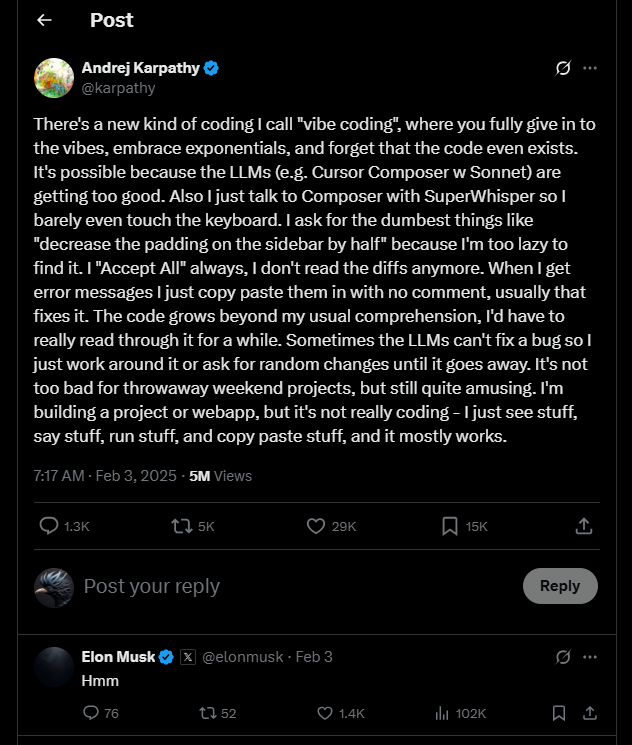
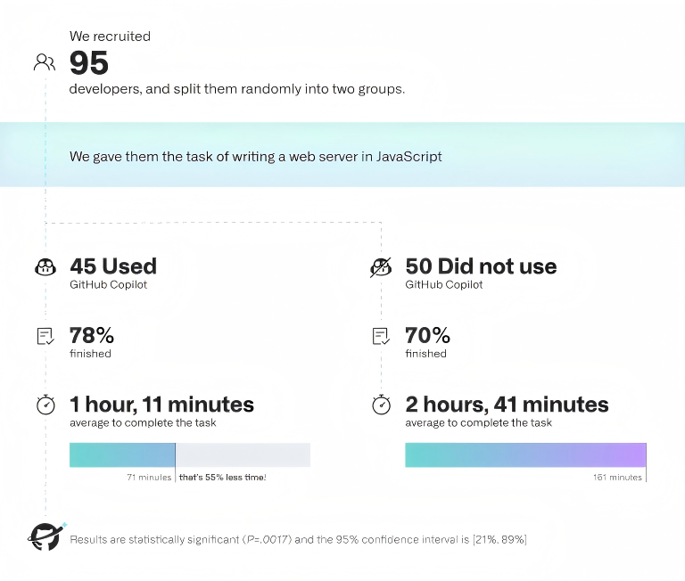
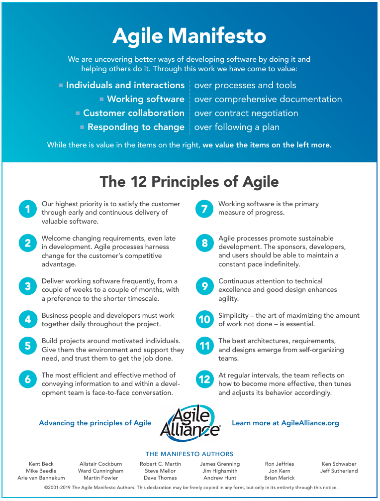

Author:
Initial Draft: January 1, 2025
Last Updated: June 17, 2025
Version: 0.2.5
Please credit the original author when reprinting or quoting.
“It was the best of times, it was the worst of times,
it was the age of wisdom, it was the age of foolishness,
it was the epoch of belief, it was the epoch of incredulity,
it was the season of Light, it was the season of Darkness,
it was the spring of hope, it was the winter of despair,
we had everything before us, we had nothing before us,
we were all going direct to Heaven, we were all going direct the other way…”—— A Tale of Two Cities, by Charles John Huffam Dickens
Table of Contents
- Prologue
- The Path of Exploration
- Agentic DevOps
- Practice
Chapter 0, Prologue
0.1 A New Era of Software Development
Agentic AI is profoundly impacting the work of software developers. When I started writing this article, it was January 2025, just as AI-assisted development tools were starting to explode onto the scene.
Cursor, an AI programming assistance tool released in March 2023, has been rolling out updates every two to three weeks. In early February 2025, I took on a consulting project to train a large group of programmers at a friend’s company on AI-assisted development. At that time, I was still using Cursor version 0.45 and talking about the advantages and convenience of “Composer”. However, in less than a month, “Cursor Agent” was launched. In my lectures to the company’s employees, I had to constantly update my material just to keep up.
With Deepseek open-sourcing the R1 inference model in early 2025, Agentic AI began to demonstrate even stronger reasoning capabilities. At the same time, AI agents have become the center of attention in the AI world. In the hyper-competitive field of AI Coding, the capabilities of the base models are evolving at a blistering pace. At the same time, Cursor, Windsurf, Github Copilot, Aider, Cline, Devin, Codex, Jules, …, these AI-assisted coding (or development) tools have repeatedly redefined what we thought was possible in programming.
On February 3, 2025, Andrej Karpathy posted a post on x.com, mentioning the strange-looking phrase “Vibe Coding”.

On March 23, 2025, Andrej Karpathy mentioned in a follow-up post: “I just vibe coded a whole iOS app in Swift (without having programmed in Swift before, though I learned some in the process) and now ~1 hour later it’s actually running on my physical phone. It was so ez… I had my hand held through the entire process. Very cool.”
The term “Vibe Coding” blew up. At the same time, the conversation about the future of human programmers took a darker turn.
Programmers using AI coding tools are well aware that, for now, AI is no silver bullet.
For a small web game like “Snake” or “Tetris”, a powerful LLM can generate a runnable game from a single prompt, almost instantly. If you are making a quick prototype application for verification, AI coding can rapidly generate a functional MVP, slashing a development cycle of one or two months down to just a few days.

However, when we need to build a system with more complex business logic, juggling factors like code quality, maintainability, and elegant design, and also considering production environment deployment, operational security, reliability, high performance…, at this time, we often hear many complaints, such as:
- “The AI doesn’t quite get what I’m asking.”
- “I ask it to fix a simple bug, and it ends up breaking something that worked perfectly fine.”
- “I have to keep telling the AI not to touch the backend code, but it keeps forgetting.”
- “You can’t trust the code it generates; you have to double-check everything.”
It’s a chaotic yet fascinating time, filled with contradictory but equally valid narratives, from “programming is dead” to “AI is making programmers more powerful than ever.”
0.2 The Current State of AI Coding
On July 7, 2022, Github published an article about Github Copilot: Research: quantifying GitHub Copilot’s impact on developer productivity and happiness, which presented a quantitative study from GitHub Copilot Labs on using AI-assisted programming tools. I’ll quote the conclusions from the article here:

We recruited 95 professional developers, split them randomly into two groups, and timed how long it took them to write an HTTP server in JavaScript. One group used GitHub Copilot to complete the task, and the other one didn’t. We tried to control as many factors as we could–all developers were already familiar with JavaScript, we gave everyone the same instructions, and we leveraged GitHub Classroom to automatically score submissions for correctness and completeness with a test suite. We’re sharing a behind-the-scenes blog post soon about how we set up our experiment!
In the experiment, we measured — on average — how successful each group was in completing the task and how long each group took to finish.
- The group that used GitHub Copilot had a higher rate of completing the task (78%, compared to 70% in the group without Copilot).
- The striking difference was that developers who used GitHub Copilot completed the task significantly faster – 55% faster than the developers who didn’t use GitHub Copilot. Specifically, the developers using GitHub Copilot took on average 1 hour and 11 minutes to complete the task, while the developers who didn’t use GitHub Copilot took on average 2 hours and 41 minutes. These results are statistically significant (P=.0017) and the 95% confidence interval for the percentage speed gain is [21%, 89%].
This experiment provides clear evidence that AI-assisted coding tools like GitHub Copilot can dramatically boost development efficiency.
As AI-assisted coding tools have evolved over the past two years, it’s clear that developer productivity has continued to climb.
“AI Coding,” “AI Dev,” and “Vibe Coding” are trending search terms. By now, you’ve likely used an AI search tool or done some digging with Deep Research yourself. Here are a few articles I found insightful:
- The Rise of the ‘Code Producers’: AI and the Future of Programming
- The Current State of AI for Coding: Powering the Future of Software Development
- Chief AI Officer Blog - The future of coding is here: How AI is reshaping software development
- What Will Software Engineering Look Like in 2027?
I used an LLM (via Deep Research) to digest these articles. Here are the key takeaways:
- Senior engineers benefit the most from AI tools, as they can accurately guide the AI and identify flaws in the output; while junior engineers, despite increased efficiency, may struggle with architectural concepts and detecting errors.
- Startups and small teams can use AI tools to accelerate development at a lower cost, while enterprise teams can maintain control and consistency while scaling.
- Non-technical innovators can use AI platforms to quickly turn ideas into prototypes without deep programming skills, but scaling beyond an MVP still requires professionals to avoid technical debt.
- Engineering teams will become leaner, shrinking from “two-pizza teams” to “one-pizza teams,” as a significant amount of work can be outsourced to AI under supervision.
- The role of the software architect will become more prominent, responsible for system architecture design, turning product requirements into functional systems, and managing fleets of AI agents.
- The AI coding market is projected to reach $99 billion by 2034, with 2025 predicted to be a breakthrough year, but developers still need to balance the speed offered by AI with the need for maintainable, high-quality code.
An illustration in the last listed article caught my attention:

The diagram predicts that in just two years, only two human roles will remain in the software engineering field:
- Engineering Leadership
- Software architects
The rest of the team will consist of AI agents. In other words, the vast majority of programmers will have been replaced by AI.
0.3 Schrödinger’s Programmer

The programmer may not be dead yet, but I believe the profession itself is on a path to extinction. Let me elaborate:
Prediction 1: In the future, everyone will be a programmer, empowered by AI.
Prediction 2: The role of the “programmer,” as a distinct profession, will eventually vanish. (Some predict this will happen in as little as two years, while others expect it to take longer.)
The first prediction is fairly straightforward. The second, however, is already starting to materialize: many tech companies have started laying off programmers. While some remain optimistic, arguing that demand for programmers is still high and dismissing the “death of the programmer” as hyperbole, my perspective is as follows:
- First, if programming becomes a notoriously unstable career path, will the next generation still be eager to pursue it?
- Second, if AI empowers everyone to code, what is the value of “programming as a career”?
- Third, perhaps we will still need some professionals to create AI and maintain the foundation of the “virtual world” — the codes. But will they still be called “programmers”? I suspect their titles will evolve into things like: AI domain experts, network operations engineers, system architects, product managers, big data analysts, software researchers…
Ultimately, the labels don’t matter, and I’m not here to argue the point. I can see the validity in different perspectives (my own isn’t set in stone 😉). What truly matters is this: we must embrace AI.
0.4 What This Article Is About
As the title “Agentic DevOps” suggests, this article delves into the methods and practices of integrating Agentic AI into the software process — proposing a new methodology for the age of AI.
Grounded in practice, this article explores how to best leverage AI — specifically Agentic AI — throughout the software development process.
Agentic AI refers to a network of intelligent agents powered by underlying models. Here:
- Models, in the current context, primarily refer to Large Language Models (LLMs) or Multimodal Large Language Models (MLLMs) based on the Transformer architecture. They serve as the “brains” of the agents.
- Agents are defined as software agents of LLMs/MLLMs with environmental awareness (Vibe awareness), capable of autonomous planning, reasoning, memory, and action.
It can be expressed with a simple formula:
It’s important to note that AI is more than just LLMs, and LLMs aren’t guaranteed to be the future mainstream. AI is evolving at a breakneck pace, and disruption is the norm. For now, LLMs are the go-to choice as they currently represent the state of the art in intelligent systems. However, other architectures may one day take their place.
For instance, Liquid Neural Networks are gaining attention for their dynamic adaptability. They can continuously learn and adapt to new data streams at runtime, exhibiting brain-like flexibility and interaction with their environment. Studies have shown that this bio-inspired algorithm outperforms mainstream deep learning solutions on key metrics like real-time performance, power efficiency, and few-shot learning. Beyond this, a variety of new neural network architectures like RetNet, RWKV, Mamba, UniRepLKNet, and StripedHyena are constantly pushing the envelope.
Perhaps one day, a new model architecture will upend the current reign of the Transformer. Consequently, code—the very building block of our virtual world — is set to undergo even more rapid and profound transformations.
Returning to our main topic: Agentic DevOps is a methodology for the DevOps process, built upon Agentic AI.
This approach, however, extends far beyond just AI Coding. From a software process perspective, we are forced to ask: Beyond the coding phase, how can Agentic AI play a larger role across the entire software development lifecycle? This includes everything from requirements gathering, design, and implementation to testing, integration, deployment, operations, monitoring, and maintenance. Can it help us (today’s programmers) boost our efficiency while producing higher-quality, more robust, and maintainable products?
This article is a practical exploration of these very questions.
0.5 Why I Wrote This Article
If I believe the profession of “programmer” is destined to disappear, why am I writing an article exploring the software development path for programmers?
The reason is clear: today’s programmers must master AI tools to enhance their capabilities, survive the fierce competition, and ultimately reinvent their roles to thrive. While AI may eventually replace programmers, those who fail to “align” with AI will first be replaced by the programmers who have mastered it. Therefore, this article is for the programmers of today.
Furthermore, the premise that “in the future, everyone will be a programmer” hinges on everyone being able to leverage AI to do so. This makes learning to effectively utilize AI an essential skill for the “programmers of the future.” Therefore, this article is also for them.
In reality, I still believe a core group of expert programmers will always exist. They may not code for a living — making them “professional” in skill but not necessarily by “profession.” They are passionate about the world of code, possess immense creative power, have deep technical expertise, and can skillfully manipulate — and even master — AI. In my eyes, these are the “super-individuals” of the future.
Chapter 1: The Path of Exploration
Software development is a practical process. Therefore, to explore Agentic DevOps, we need to start from two paths: observing Agentic AI and exploring DevOps practices.
1.1 AI Observation and “Problem Management”
First comes “AI Observation.” We will start with a “problem management” approach, thinking about solutions based on the problems encountered while using Agentic AI.
It’s important to note that problem management is a “bottom-up” approach to discovery, where the issues are often granular and specific. Our goal isn’t just to find solutions to individual problems, but to understand the very nature of Agentic AI. As we integrate it into the DevOps lifecycle, we must learn its capabilities and limitations — in other words, what it excels at, and what tasks are best left to human.
“Problem Management,” rooted in the core processes of ITSM (IT Service Management), is a systematic method for:
- Identifying the underlying problems that cause incidents.
- Analyzing the root causes of these problems.
- Resolving issues by implementing solutions.
- Preventing similar problems from recurring.
Through systematic root cause analysis, problem management not only responds to events that have already occurred (reactive problem management) but also identifies potential issues (proactive problem management) to explore solutions.
To this end, I have summarized “Nine Questions.”
Question 1: How to Address the “Forgetfulness” of AI Coding Tools?
-
Description of the Issue
When using AI coding assistants like Cursor and GitHub Copilot, a common frustration is their tendency to “forget” important instructions or context provided earlier in a session.
For example, you might instruct the agent to follow a strict Test-Driven Development (TDD) process:
1
- Write tests first, then the code. Run tests and update the code until they pass.
However, after a lengthy interaction where you’ve provided multiple pieces of context, you might ask for a simple change, like adding an HttpOnly cookie to an authentication flow. The agent, having forgotten the TDD rule, will often jump straight to writing the implementation code, cheerfully announcing its completion while completely ignoring the testing requirement.
This forgetfulness becomes even more maddening when dealing with compilation errors. A “forgetful” agent might get stuck in a loop, repeatedly trying the same incorrect fixes for a problem that was already addressed, wasting tokens and time as it cycles through solutions that have already failed.
-
Root Cause Analysis
An agent’s “forgetfulness” is not a simple flaw but a result of two fundamental technical constraints:
- The inherent context window limitations of the underlying Large Language Model (LLM).
- The design of the agent’s own memory system.
The context limitations of LLMs stem from several factors inherent to their architecture:
- Attention Dilution: In a Transformer’s self-attention mechanism, attention weights are distributed across all tokens in a sequence, summing to 1. As the sequence grows longer, the average attention paid to any single token decreases. Important instructions can get “drowned out” by a sea of less relevant information, making it hard for the model to focus on key details.
- Positional Encoding Degradation: Models are trained with a fixed maximum context length (e.g., 4k, 32k tokens). Their ability to understand the position of information degrades beyond this limit. The farther a piece of information is from the current focus, the weaker its positional signal becomes.
- Computational Constraints: To manage the immense computational cost of processing long sequences, LLMs may be forced to compress, summarize, or even discard information.
- Training Data Bias: Most training data features related information in close proximity. Consequently, models are not well-trained to capture dependencies over extremely long distances. Even when a model’s context window is expanded, its performance on long-range reasoning remains handicapped if its training data lacked such examples.
- Information Decay Across Layers: As information passes through the multiple layers of a Transformer, some details can be lost or distorted at each step. This cumulative effect leads to significant decay of information over long distances, and the vanishing gradient problem can become more acute in long sequences.
The agent’s memory mechanism, separate from the LLM’s context, typically involves short-term and long-term storage. To leverage long-term memory, the agent must search its “memory bank” to find and retrieve the most relevant information to inject into the LLM’s prompt. The precision of this retrieval is critical to the quality of the final output. Retrieving the right information from a massive knowledge base is a significant challenge. Moreover, if many information fragments are recalled, they may collectively exceed the LLM’s context limit.
-
Solutions
Obviously, once the base model is fixed, the primary area for optimization is the agent itself. Beyond that, understanding these principles allows us to optimize how we use the agent.
Optimization can be pursued through the following solutions:
- Choose a base model with a long context window.
- Enhance the agent’s memory capabilities. For agents that support MCP (e.g., Cursor, Cline), select a suitable Memory MCP enhancement tool.
- Provide more precise context in each turn of the conversation and repeat important rules when necessary.
- Summarize key interactions with the agent and record them in an auxiliary document. In long-running sessions, this document can be invoked as context for the prompt when needed.
- Use an optimized RAG to achieve higher recall accuracy for the knowledge base.
-
Key Takeaways
- When introducing an agent into the DevOps process, we must recognize its limitations, such as memory issues. This allows us to optimize our interaction methods, control the length and precision of the conversation context, and ultimately unlock its full potential to get better outputs.
- For Agentic AI, we can typically analyze and address issues at both the LLM and Agent levels to find solutions for enhancing their capabilities.
- The base model is often a critical, decisive factor. Therefore, the DevOps process requires a powerful base model or one that has been fine-tuned for specific capabilities.
- MCP tools are one potential solution for enhancing Agent/LLM capabilities.
Question 2: How to Mitigate Hallucination in Agentic AI?
-
Description of the Issue
Agentic AI frequently produces incorrect code or nonsensical responses. It can also introduce unexpected behavior by fabricating logic out of thin air. While current tools like Cursor demonstrate high accuracy for local code completion, the problem of hallucination becomes more pronounced during “Vibe Coding.” This not only compromises code quality but also demands significant human intervention, leading to increased overhead and costs.
-
Root Cause Analysis
The root causes of LLM hallucination are inherent to their design and training:
- Optimized for Fluency, Not Factuality: LLMs predict the next token based on probability distributions. Their optimization goal is to generate fluent, coherent text, but high linguistic probability does not equate to factual correctness. This allows models to generate content that “sounds right” but is actually wrong.
- Training Data Flaws: The quality of the training data is another key contributor. Inaccuracies, biases, or contradictions in the data are learned and can be reproduced as hallucinations.
- Misaligned Optimization Targets: Alignment techniques like RLHF primarily optimize for human preferences (e.g., fluency, helpfulness, harmlessness), where factual accuracy is often not the main goal. Human evaluators may not recognize all factual errors, so the model learns to cater to perceived expectations rather than pursuing truth.
- Lack of Real-World Grounding: Models cannot access real-time, authoritative fact databases. They lack a mechanism to verify their own generated content, cannot distinguish between memorized facts and inferred guesses, and their internal “world model” from training is both static and incomplete.
- Flawed Generalization and Pattern Matching: Models may incorrectly generalize patterns from training data to inapplicable scenarios, make inferences based on superficial similarities rather than deep logical reasoning, and tend to “fill in the blanks” when information is insufficient rather than admitting ignorance.
- Architectural Limitations: The Transformer architecture lacks an explicit mechanism for fact storage and retrieval. Knowledge is encoded distributively in its parameters, making it difficult to control precisely. It also has no built-in capability for uncertainty quantification or self-correction.
At the LLM level, major model providers implement a series of optimizations, such as introducing fact-checking at the architectural level. However, these optimizations are generally generic and may not be effective for domain-specific knowledge.
-
Solutions
Standard mitigation techniques include using Retrieval-Augmented Generation (RAG) and other tools to ground the agent with real-time, external data. In the context of DevOps, building and maintaining a dedicated external knowledge base is one of the most effective long-term solutions.
Furthermore, in a complex development process, another powerful technique is to create auxiliary documentation for the codebase. Providing this documentation to the agent as timely and accurate context can significantly suppress hallucinations. For example, an agent may not know the details of a specific API. If you provide the API documentation, the agent will almost always generate the correct code for the call.
-
Key Takeaways
- Every piece of information provided to an LLM functions as a prompt — whether it’s a system prompt, a rule in a tool like Cursor, or an on-the-fly document provided as context. Constructing an accurate, fact-based context for every conversation is crucial for the accuracy of the output.
- External facts can be sourced through MCP tools.
- For each conversational turn, especially in long-running DevOps processes, we must manage the “granularity” of the context. This involves:
- Decomposing complex problems into smaller, self-contained tasks.
- Ensuring the context for each task is focused and manageable, avoiding an overload of irrelevant information.
The concept of “granularity” is analogous to human problem-solving. When faced with a complex web of interconnected tasks, it’s nearly impossible to devise a perfect solution in one go. However, by decomposing the problem and tackling it step-by-step, even the most complex challenges become solvable. This approach aligns perfectly with foundational software engineering principles like user stories, use cases, modularity, iteration, the SOLID principles, and decoupling. The core skill, therefore, lies in mastering the art of decomposition.
Question 3: Is Agentic AI Unsuitable for Legacy System Maintenance?
-
Description of the Issue
While consulting for a friend’s company, I observed their struggle with maintaining a legacy system for a major client. Despite using a suite of mainstream models (ChatGPT, Gemini, Claude, Deepseek R1) and AI coding tools (Cursor, Tongyi Lingma, Github Copilot), they concluded that AI’s contribution to the maintenance and modernization of this system was minimal. The primary challenges were:
- Misinterpreting business logic embedded in the code.
- Inability to effectively apply or understand non-standard technical frameworks.
- Difficulty comprehending the large and complex codebase.
- Inability to decipher complex database processes.
- Extreme difficulty in adding new features or patches, given the sparse documentation.
-
Root Cause Analysis
The LLMs’ limitations in this domain are significant, creating a clear ceiling for their effectiveness. Modernizing legacy systems is an inherently uncertain process. A company’s core business logic is often highly proprietary and unique, meaning public code repositories lack sufficient high-quality examples for an AI to learn from effectively. Furthermore, understanding the system requires deep domain knowledge to grasp specific rules and constraints that are often implicit and undocumented.
-
Solutions
There is no “silver bullet” for this challenge. While tools like Jules and Code Rabbit can assist with code interpretation, internal security policies often prohibit exposing proprietary code to external services. Even when permissible, the results of such analysis are often unpredictable.
Consequently, the ideal solution involves training proprietary models or deploying private ones, complemented by building and continuously optimizing powerful in-house agentic tools. However, this path is costly, time-consuming, and requires significant technical expertise that many organizations lack.
A more pragmatic approach is to start by improving API documentation and establishing clear isolation boundaries. New features can then be added against these well-defined APIs. From there, human developers must intervene to decompose the legacy code, gradually decoupling modules and migrating them incrementally. Each step of this migration requires establishing new isolation measures and enhancing the documentation.
-
Key Takeaways
The preceding three questions lead to a crucial conclusion: A strong positive correlation exists between the effectiveness of Agentic AI and two key factors of a given task: the clarity of its problem definition and the convergence of its solution space.
Tasks like legacy system modernization, highly customized enterprise application development, and module design requiring deep domain knowledge are all characterized by “ambiguous problem definitions” and “divergent solution spaces”.
This is where human developers demonstrate their core value — in the spaces where Agentic AI currently falls short. Humans excel at handling ambiguity, defining complex problems, exploring innovative solutions, and, most importantly, decomposing large, ill-defined engineering goals into smaller, clearly defined sub-tasks with convergent solution spaces that an AI can effectively process.
Question 4: What is the True Quality of AI-Generated Code?
-
Description of the Issue
Experienced engineers using AI coding assistants in rigorous projects find that while AI-generated code can occasionally be impressive, its quality is often highly inconsistent.
Key issues observed include:
- Inefficiency and Poor Design: Though functionally correct, the code often suffers from convoluted logic, duplicated blocks, and arbitrary additions that violate core design principles like SOLID.
- Deviation from Established Standards: In complex projects, adherence to coding standards and design patterns is critical for maintainability. AI agents, despite being given rules, frequently produce non-compliant code that disregards team-specific conventions.
- A comprehensive study from developer analytics firm GitClear has uncovered concerning trends in code quality since the widespread adoption of AI coding tools. GitClear’s analysis of 153 million lines of code reveals that while AI-generated code is written quickly, it leads to “AI technical debt,” manifested as: doubled code churn rates (dramatic increase in code abandoned within two weeks); increased “copy-paste code” with lack of integration with existing codebase.
-
Root Cause Analysis
The quality issues are rooted in the AI’s core design principles and optimization objectives:
- Optimized for Generation, Not Quality: AI coding tools are engineered as code generators, not quality assurance systems. Their primary goal is to produce syntactically correct and runnable code, not necessarily high-quality or optimal code. High syntactic probability does not guarantee semantic correctness or architectural soundness.
- Biases and Flaws in Training Data: AI models are trained on public repositories that contain a wide spectrum of code quality. The models inevitably learn and reproduce anti-patterns from the uncurated data they are fed.
- The Semantic Gap: An LLM’s understanding of code is primarily syntactic, not semantic. This “semantic gap” allows an AI to produce code that is superficially correct but harbors subtle logical flaws rooted in a misunderstanding of the code’s true purpose.
- Blindness to Non-Functional Requirements: AI agents are often blind to non-functional requirements such as performance, scalability, and security. Their awareness of resource constraints, concurrency issues, or maintainability is minimal at best.
-
Solutions
Addressing these quality issues requires a multi-faceted approach:
- Mandate Human-Led Code Reviews: All AI-generated code must undergo review by human engineers, with rigorous scrutiny of maintainability, performance, and architectural alignment.
- Treat AI Output as a First Draft: AI-generated code should be considered a starting point or a “scaffold,” not a finished product. Adopt an iterative workflow where AI generates the initial draft, which is then progressively refactored and optimized by a human.
- Automate Quality Gates: Integrate static analysis and code metric tools into the CI/CD pipeline to automatically assess AI-generated code and enforce quality standards.
- Enforce High-Quality Prompting: Prompts must explicitly define non-functional requirements, architectural constraints, and desired design patterns to guide the AI toward better output.
- Curate High-Quality Knowledge Bases for AI: Build and maintain an internal library of high-quality code templates and best practices. Use RAG to provide the AI with superior, context-aware reference samples.
-
Key Takeaways
This analysis of code quality leads to several critical takeaways for engineering leaders:
- Beware the “Velocity Trap”: The immediate productivity gains from AI can mask the gradual accumulation of technical debt. This initial speed can lead to crippling maintenance costs and profound system instability down the line if quality is not actively managed.
- Evolve Quality Standards for Human-AI Collaboration: Quality standards must evolve. Beyond traditional metrics, they must now include “AI-friendliness” (how easily code can be understood and extended by an AI) and the overall quality of the hybrid, human-AI codebase.
- Adapt Development Workflows for AI: Traditional workflows must be adapted to balance rapid iteration with robust quality assurance, establishing new quality gates and review strategies specifically designed to manage AI-generated code.
- Prioritize Long-Term Technical Health: Teams must measure success not just by short-term efficiency gains but by the long-term health and maintainability of the codebase.
Question 5: AI Coding Assistant vs. AI Agent: What’s the Real Distinction?
-
Description of the Issue
A common narrative in tech discussions distinguishes between “coding assistants” (like Cursor or GitHub Copilot) and “AI engineers” (like Devin). The latter are often framed as the next evolutionary step, possessing greater autonomy and capability. This creates a false dichotomy, leaving developers and teams wondering which tool represents the “correct” path forward.
-
Root Cause Analysis
The debate is rooted in a fundamental architectural and philosophical difference between two models of human-computer interaction: augmentation and automation.
-
Level of Autonomy: This is the most visible differentiator.
- Coding Assistants (Augmentation): These tools are built on a “Human-in-the-Loop” paradigm. The human is the pilot, making all critical decisions. The AI acts as an intelligent co-pilot, augmenting the developer’s skills with suggestions, completions, and explanations at every micro-step.
- AI Engineers (Automation): These systems are designed for a “Human-on-the-Loop” (or even “out-of-the-loop”) paradigm. The AI becomes the pilot. It receives a high-level directive — a feature spec, a bug report — and autonomously navigates the entire workflow of planning, coding, testing, and debugging.
-
Core Architecture: Autonomy dictates architecture.
- Assistants have a relatively simple architecture: an LLM integrated into an IDE. The interaction is tactical and stateless: “user’s immediate command → AI-generated suggestion.”
- Agents rely on a more complex “agentic architecture.” They use an LLM not just for generation, but as a reasoning “brain” that directs a suite of tools (file I/O, terminal access, web search, etc.). Their workflow is strategic and stateful: a continuous loop of “goal → plan → act → observe → correct.”
Therefore, framing this as a linear evolution is a misunderstanding. They are not sequential versions of the same thing but two distinct classes of tools serving different strategic purposes.
-
-
Solutions
This is not an “either/or” choice but a strategic imperative to synergize. The right approach is to integrate both into a unified, intelligent development workflow.
- The Inner Loop: Augment with Assistants. For the high-frequency, creative “inner loop” of coding, building, and debugging, assistants are indispensable. This phase is defined by ambiguity and requires human intuition. The AI’s role is to enhance cognitive throughput, not replace the developer.
- The Outer Loop: Automate with Agents. For well-defined, self-contained tasks, delegate to AI Agents. This includes implementing an API from a rigid specification, fixing a well-documented bug, or generating a comprehensive test suite. This is about offloading standardized work packages.
- The Future is Fusion. The ultimate goal is a seamless fusion of both models. Developers will operate within a single environment, able to dynamically modulate the AI’s autonomy. Like a driver switching between manual, assisted, and self-driving modes, an engineer will deploy an AI agent for the initial heavy lifting, then seamlessly transition to an assistant for fine-grained control and creative refinement.
-
Key Takeaways
This distinction reveals the tectonic shifts Agentic AI is bringing to software engineering.
- The Evolution of the Developer: The developer’s role is not disappearing; it’s elevating. We are moving from “creators of code” to “architects of systems, definers of problems, and auditors of AI-driven solutions.” The premium on core engineering skills — clear specification, robust architectural design, and rigorous validation — is higher than ever.
- The Autonomy Spectrum: The future isn’t a binary choice; it’s a spectrum. The ideal tool will function like an “autonomy dial,” allowing developers to increase or decrease the AI’s independence based on the task’s ambiguity, risk, and their own context.
- Redefining the Development Workflow: The entire workflow is being reinvented. A linear process becomes a dynamic, automated loop. An AI agent consumes a Jira ticket, executes the development and testing, and generates a pull request. A human, augmented by an assistant, performs a high-level, strategic code review. This is the blueprint for the future of Agentic DevOps.
Question 6: The Testing Paradox: Why Agentic AI Struggles with Quality Assurance
-
Description of the Issue
For many developers, testing is a thankless but essential discipline. The arrival of Agentic AI felt like a paradigm shift, promising to automate everything from test case design to the implementation of once-dreaded methodologies like TDD.
However, the initial hype has given way to a more sobering reality:
- The “Happy Path” Trap: AI excels at generating unit tests for ideal scenarios but consistently fails to address complex business logic, critical edge cases, and security vulnerabilities. This creates a dangerous illusion of safety.
- Semantic Blindness: AI often misunderstands the true business intent of the code. It produces syntactically perfect tests that pass, while the core business logic remains dangerously unvalidated.
- Architectural Ignorance: When faced with tests requiring complex environment setup, data mocking, or cross-service integration, AI’s lack of a holistic architectural understanding renders it ineffective.
- High-Maintenance, Brittle Tests: AI-generated tests are often tightly coupled to implementation details. Code refactoring immediately renders the test suite obsolete, creating a massive maintenance burden.
-
Root Cause Analysis
The AI’s shortcomings in testing are a direct result of its fundamental limitations:
- Lack of Strategic Context: Meaningful QA requires a strategic understanding of the application’s architecture, data flows, and business objectives. An AI, confined to its context window, sees only a tactical snapshot.
- The Semantic Gap: An AI can validate syntax, but it cannot grasp semantics. It can confirm a function was called, but it cannot comprehend whether the result aligns with implicit, real-world business expectations.
- Skewed Training Data: Public code repositories are saturated with trivial unit tests. The kind of sophisticated, scenario-driven tests that safeguard complex systems are rare. The AI’s worldview is therefore inherently biased toward generating simplistic, low-value tests.
- Inability to Think Adversarially: The essence of great testing is adversarial thinking — a creative, exploratory process of anticipating failure. This is a fundamentally human mode of intelligence that is alien to current AI models.
-
Solutions
To unlock AI’s potential in testing, we must reposition it: not as a strategist, but as a powerful execution engine directed by human intelligence.
- Human-Led Design, AI-Powered Implementation: The strategic role of developers and QA engineers is to design comprehensive test specifications. The AI’s role is to take these specs — written in natural language or pseudo-code — and handle the tactical work of generating the test code.
- TDD 2.0: From Test Code to Test Specs: The agentic era redefines TDD. The mantra is no longer “write the test code first.” It is: “Write the test specification first.” The human defines the contract — the acceptance criteria and boundary conditions. The AI then generates the test suite to enforce that contract, followed by the implementation code that fulfills it.
- Coverage-Driven Iteration: Use code coverage tools not as a vanity metric, but as a map to identify the AI’s blind spots. Each identified gap becomes a new, precise directive for the next round of AI-assisted test generation.
- Curate a Private Testing Knowledge Base: Build an internal knowledge base of high-quality test cases, common bug patterns, and domain-specific testing strategies. Using this curated knowledge via RAG will dramatically outperform models trained on generic, public data.
-
Key Takeaways
This reality check on AI in testing offers critical insights for engineering leaders.
- Quality is Architected, Not Automated: AI’s rise reveals that the core of QA is the architectural act of test design. The manual labor of coding can be automated, but the wisdom to architect a robust testing strategy remains an irreplaceable human faculty.
- TDD as a Governance Framework: For teams concerned about the quality of AI-generated code, TDD is the ultimate governance tool. A human-architected test suite becomes the non-negotiable arbiter of correctness, ensuring that AI’s velocity doesn’t compromise engineering rigor.
- “Shift-Left” as a Mandate: AI makes “shifting left” more critical than ever. By generating unit tests instantly, we can enforce quality at the earliest possible moment, drastically reducing the downstream cost of defects.
- The New Test Engineer: The value of the test engineer is migrating up the stack—from execution and scripting to strategy and governance. Their new role is to define quality standards, architect test strategies, and build the automated frameworks that govern AI. A deep capacity for business analysis, problem framing, and scenario modeling will become their defining attributes.
Question 7: Beyond Coding, What Else Can Agentic AI Do?
-
Description of the Issue
The discourse around AI in software development is overwhelmingly focused on “AI coding.” While this code-centric work involves extensive documentation — and programmers sometimes create more of it specifically to improve AI performance — few have paused to think beyond this paradigm. Is Agentic AI’s role in the software process confined to being a “programmer”? Is it possible it could be much more?
-
Root Cause Analysis
Limiting Agentic AI to the role of a “programmer” stems from several factors:
- Initial Impressions of Capability: Large Language Models (LLMs) first took the world by storm with their powerful code generation, leading the first wave of AI tools (like the early versions of GitHub Copilot) to focus on coding assistance. This powerful first impression has anchored the market’s and users’ attention almost exclusively on the act of “writing code.”
- The Explicit vs. Tacit Knowledge Gap: Coding is based on “explicit knowledge” (programming languages, algorithms, API documentation) that exists in massive, structured global code repositories, making it ideal for AI training. In contrast, roles like product managers, architects, and project managers depend heavily on “tacit knowledge”—business insight, organizational communication, and deep domain expertise. This type of knowledge is difficult to quantify, making it a significant challenge for AI to learn.
- Limitations of Interaction Models: Traditional “coding assistance tools” operate on a “command-and-execute” model, where the developer issues a precise instruction and the AI returns code. This model is a natural fit for coding tasks. Enabling an AI to take on other roles requires a more advanced, “goal-driven” agentic architecture, which is a greater technical challenge.
- Lack of Cross-Domain “Toolsets”: A human programmer primarily needs a keyboard, but a project manager relies on Jira and Confluence, while an SRE uses Datadog and Prometheus. For an AI to step into these roles, it must be equipped with and trained to use these specialized tools — a complex system integration challenge.
-
Solutions
To unlock AI’s potential beyond coding, the core strategy is to treat Agentic AI as a team member, assign it distinct roles, and equip it with the necessary knowledge and tools.
While this approach may seem premature — given that AI’s limitations are still apparent and truly capable Agents have yet to emerge — we are at the perfect moment to re-examine our software engineering methodologies.
-
Key Takeaways
When we expand our view from “AI coding” to the entire software development lifecycle, we uncover more disruptive insights:
- From “AI Programmer” to “AI-Native Development Team”: The future of software development may shift from a “human team + AI assistant” model to one of “human experts + an AI-native development team.” In this model, the human’s role is to define goals, set strategies, and make final decisions, while a virtual team — composed of an AI product manager, AI architect, AI programmer, and AI test engineer — handles the vast majority of the execution.
- The Ascendant Value of “Knowledge Engineering”: To enable AI to excel in these new roles, the key is to provide it with high-quality, structured “knowledge.” Therefore, transforming an organization’s internal tacit knowledge (business logic, architectural decisions, operational experience) into an explicit, AI-consumable knowledge base will become a new core competitive advantage. This is a central theme of Agentic DevOps.
- DevOps as the Ideal Framework for Agentic AI: The principles at the heart of DevOps — automation, continuous feedback, and cross-functional collaboration — provide the perfect operational framework for this “human-AI hybrid team.” The CI/CD pipeline becomes the “conveyor belt” that passes work between AI Agents, while monitoring data acts as the “feedback signal” driving their self-optimization. The entire development process becomes integrated and accelerated to an unprecedented degree.
- The Ultimate Vision of Human-AI Symbiosis: The fusion of human creativity and strategic thinking with AI’s efficient execution and data analysis capabilities creates a powerful symbiotic relationship. Humans are liberated from tedious execution to focus on innovation, decision-making, and high-level control of complex systems, ultimately achieving a quantum leap in both software development efficiency and quality.
Question 8: Is Vibe Coding Truly the Future?
-
Description of the Issue
The premise of Vibe Coding is seductive: let humans focus on high-level direction while Agentic AI handles the granular work of code generation and debugging. This approach has proven remarkably effective for prototyping and developing small applications. However, it is rarely adopted in large-scale engineering projects. Why is that?
-
Root Cause Analysis
The resistance to Vibe Coding in large-scale projects isn’t arbitrary; it stems from its attempt to bypass the crucial processes and discipline that underpin robust software engineering.
- The Nature of Large-Scale Engineering as “Deterministic Engineering”: Unlike the exploratory and uncertain nature of prototyping, large-scale engineering projects demand a high degree of certainty, reliability, and maintainability. This requires a rigorous, structured development process where every step — requirements analysis, architectural design, coding, testing, deployment — is clearly defined, executed, and verified. Vibe Coding blurs or even skips these definition and verification steps, running counter to the fundamental nature of large-scale engineering.
- The Vast Difference in “Solution Space”: The “solution space” for a prototype or a small application is limited, and an AI might be able to “guess” a viable solution. In contrast, the solution space for a large engineering project is enormous, constrained by countless explicit (e.g., technical specifications, performance metrics) and implicit (e.g., team habits, legacy baggage) factors. Allowing an AI to freely explore (Vibe) this vast solution space without a clear blueprint and roadmap will almost inevitably lead to chaos and failure.
- The Trust and Accountability Gap: In the Vibe Coding model, human developers delegate a significant amount of control and responsibility to the AI. In prototyping, this is of little consequence, as the cost of failure is low. But in large-scale engineering, even a minor error can have severe consequences. Given the current unpredictability (hallucination) and “black-box” nature of AI, human engineers cannot reasonably place that level of trust in it, especially when the stakes are high.
-
Solutions
Personally, I am a big fan of Vibe Coding and have been actively experimenting with it. However, at this point in 2025, I maintain a cautious attitude towards applying Vibe Coding in large-scale engineering projects. Perhaps the best practice for now is:
- Embrace Vibe Coding in the “Exploration Phase”: During the initial stages of a project, in the technology selection phase, or when prototyping new features, Vibe Coding is an excellent exploration tool. It can help teams quickly experiment with different technical solutions and validate the feasibility of ideas, thereby stimulating innovation and accelerating decision-making.
- Treat the Output of Vibe as a “Rough Draft,” Not a “Finished Product”: The code rapidly generated through Vibe Coding should not be considered the final deliverable but rather a “code scaffold” that must be methodically reviewed, tested, and refactored into production-ready code.
- Establish a “Vibe-to-Engineering” Transition Process: Teams need to establish a clear process for transforming the prototype output from Vibe Coding into code that meets engineering standards. This process should at least include:
- Code Review and Refactoring: Human engineers must conduct a rigorous review of the AI-generated code, eliminating flawed designs and refactoring inefficient implementations to align with the team’s coding standards and architectural principles.
- Supplementing Test Cases: Following the principles mentioned in previous sections, comprehensive unit and integration tests must be added to the “code scaffold” to ensure its logical correctness and stability.
- Completing Documentation: Necessary comments and design documents must be added to the code, turning it into an engineering asset that can be understood and maintained by other team members.
-
Key Takeaways
A deeper reflection on Vibe Coding reveals the essence of human-AI collaboration and the future shape of software development.
- The Duality of “Exploration” and “Discipline”: Software development naturally encompasses two types of activities: “exploratory” creative work and “disciplined” engineering work. Vibe Coding is the ultimate expression of exploratory activity in the AI era. The future of development lies in finding a dynamic balance between these two activities.
- AI Redefines the “Prototype”: In the past, building an interactive prototype was a resource-intensive endeavor. Vibe Coding shatters that barrier, allowing teams to generate functional prototypes with unprecedented speed and minimal cost. This fundamentally changes how we validate ideas and iterate on products.
- Engineering Capability as the Bedrock for Harnessing AI: The more powerful the AI, the greater the premium on “engineering capability.” Only teams with strong engineering capabilities can sculpt the vibrant “rough drafts” generated by AI into robust, reliable, and elegant “engineering works of art.” Without engineering discipline, the high speed brought by AI will only lead to a higher degree of chaos.
- The Boundaries of Human-AI Collaboration: The limitations of Vibe Coding draw a clear line in the sand for human-AI collaboration. In domains demanding high certainty, reliability, and accountability, the judgment, design, and ultimate oversight of human engineers remain indispensable.
Question 9: Will Agentic AI Lead to an Upgrade or a Downgrade in Programmer Skills?
-
Description of the Issue
This is a question that nearly every developer who encounters Agentic AI asks themselves, and the community discussion is sharply divided into two camps:
-
The “Skill Degradation” Theory (the “Crutch” argument): This viewpoint argues that over-reliance on AI will lead to the atrophy of developers’ core programming skills. Just as relying on a calculator can diminish mental arithmetic abilities, developers who grow accustomed to letting AI generate code, fix bugs, and design solutions risk losing the ability to solve problems from scratch, perform deep debugging, and mentally simulate complex algorithms. In the long run, developers could be reduced to “prompt engineers” who only know how to state requirements, with an increasingly shallow understanding of underlying principles.
-
The “Skill Evolution” Theory (the “Leverage” argument): The opposing view holds that AI is a powerful empowering tool. It frees developers from tedious, repetitive, low-level coding tasks, allowing them to focus their energy on higher-value activities such as system architecture design, untangling complex business logic, weighing technical trade-offs, and collaborating with cross-functional teams. AI becomes a “lever” for developers’ abilities, enabling them to tackle more complex and ambitious projects, thereby achieving a quantum leap in their overall skillset.
-
-
Root Cause Analysis
The root of this debate lies in the structural reshaping of the “programmer” role’s skill stack initiated by AI. At its core, the issue is about:
- Cognitive Offloading vs. Cognitive Augmentation: AI tools allow developers to “offload” a portion of their cognitive load, such as memorizing API details or writing boilerplate code. Whether this offloading leads to skill atrophy or augmentation depends entirely on the developer’s mindset and methodology.
- Reallocation of Skill Value: Traditionally, the ability to quickly and flawlessly hand-code complex algorithms was considered a high-level skill. But when an AI can do the same in seconds, the scarcity value of that skill inevitably declines. Simultaneously, the value of other skills is magnified, such as: the ability to define problems (how to clearly describe a complex requirement to an AI), the ability to validate solutions (how to design tests and evaluation criteria to ensure the AI’s solution is correct and reliable), and the ability to integrate systems (how to elegantly incorporate AI-generated code into a large, existing system).
- The Lure of the “Comfort Zone”: AI offers an unprecedented “comfort zone,” allowing developers to quickly obtain solutions that “seem to work” without needing a deep understanding of the principles behind them. For developers lacking self-discipline and a growth mindset, it is incredibly easy to fall into the trap of instant gratification, thereby ceasing to explore deeper knowledge and leading to skill stagnation or even regression.
-
Solutions
Ensuring that Agentic AI becomes a “lever” for skill enhancement rather than a “crutch” requires a concerted effort from developers, teams, and the education system.
- Embrace “Deliberate Practice”: Developers need to consciously use AI as a learning tool. For instance, after AI generates code, they shouldn’t settle for code that simply “works.” They should proactively seek to understand its implementation logic, consider if there are better solutions, and even try to rewrite it themselves to deepen their understanding. When an AI fixes a bug, they should analyze its root cause, not just apply the patch.
- Redefine the Boundaries of Human-AI Collaboration: Teams need to establish clear norms for human-AI collaboration. For example, stipulating that AI is primarily used for tasks like prototype exploration, code drafting, and unit test generation, while critical decision points like core architectural design, security reviews, and final code merges must be led by human developers. This is akin to a pilot using autopilot for most of the flight but taking manual control during critical phases like takeoff and landing.
- Adjust Learning and Evaluation Systems: Educational institutions and corporate training programs need to shift from “teaching knowledge” to “cultivating capabilities.” The focus should be on developing students’ problem decomposition skills, critical thinking, systems design thinking, and the ability to ask high-quality questions. In performance evaluations, less emphasis should be placed on low-level metrics like “lines of code,” and more weight should be given to high-level metrics like “architectural contribution,” “technical influence,” and “ability to solve complex problems.”
- Build “T-shaped” or “Pi-shaped” Skill Structures: Developers should use AI to rapidly broaden their knowledge base (the horizontal bar of the T), for example, by quickly learning a new language or framework. At the same time, they should use the time saved to deepen their core area of expertise (the vertical bar of the T), such as specific business domain knowledge, underlying system principles, or team leadership.
-
Key Takeaways
This discussion about skills reveals the core logic of developer self-development in the Agentic AI era.
- The “Upskilling” of Core Competencies: The core skills of a programmer are not disappearing; they are “upskilling.” The center of value is shifting from how to implement, to defining what to build and validating why it matters.
- “Growth Mindset” is the Ultimate Weapon: In an era of rapid technological iteration, the only constant is change itself. Developers with a “Growth Mindset” will see AI as a powerful ally for lifelong learning, constantly challenging themselves and expanding their boundaries. In contrast, those with a “Fixed Mindset” are more likely to feel threatened and anxious, and may ultimately be left behind.
- The Ultimate Locus of Responsibility: AI can generate code, but it cannot bear responsibility. The responsibility for the quality, security, performance, and ethical impact of a software product will always rest with human developers and their organizations. This ultimate responsibility requires developers to possess a comprehensive engineering acumen and professional judgment that goes beyond mere coding.
- From “Learning to Code” to “Learning to Learn”: For the next generation of developers, the most important thing may no longer be learning a specific programming language as early as possible, but rather learning how to learn — how to collaborate effectively with an increasingly powerful AI “colleague,” and how to use it to accelerate their own cognitive and creative processes.
In fact, if you recall the event a few years ago when AlphaGo defeated top human Go players like Lee Sedol and Ke Jie, and then look at the state of the Go world in recent years, you will find that the overall skill level of human Go players has made a quantum leap. This stands as a powerful, real-world testament to this perspective.
Revelations from the “Nine Questions”
As the saying goes, “a great wind rises from the ends of the green grass.” These “Nine Questions” all spring from the minutiae of day-to-day work. This has been a “bottom-up” process of exploration. My purpose in writing them is clear: to find the profound in the mundane and, naturally, to “cast out a brick to attract a jade” — in the hope of eliciting more insightful responses.
Fundamentally, these challenges all stem from the emergence of this new species we call “Agentic AI.” On closer inspection, however, they are deeply rooted in a discipline humanity has spent more than half a century developing: software engineering. This field has always been dedicated to resolving the various difficulties within the software process, and the issues we grapple with today are by no means outside its purview. Faced with the arrival of this new “AI” species, our task is to adapt and iterate upon these time-tested solutions to meet the new reality.
1.2 Deconstructing Software Process Methodologies
Software engineering is dedicated to the study of the software process, and over time, it has systematically built a vast repository of methodologies. These methodologies represent the crystallization of human intellect and offer “top-down” guidance for implementing software processes.
To better draw upon this heritage, let’s first review the key milestones in the evolution of the software process.
1.2.1 A Look Back: The Three Stages of Software Process Development
To ease into the topic, I will divide the evolution of the software process into three stages and one methodological system that cuts across these stages.
Phase One: Structured Methodologies (1960s to circa 2015)
In the earliest days of software development, there was virtually no formal development process. Developers would write code ad hoc, then engage in cycles of testing and bug fixing until the software was marginally functional.
-
The Rise of Structured Methods (1960s - 1970s): The Waterfall Model
To address the “software crisis,” engineering discipline was introduced. The Waterfall Model was the first explicitly defined process model, emphasizing sequential phases and thorough documentation. It divided the software lifecycle into linear stages: requirements analysis, design, coding, testing, and maintenance.
The Waterfall Model became a highly influential software engineering methodology that continues to be used in some large-scale software engineering projects today.
This methodology requires rigorous project control, predictability, and comprehensive documentation. However, it proved overly rigid and poorly adapted to changing requirements.
-
Refinements and Reconsiderations of the Waterfall Model (1980s): Iterative, Incremental, Prototyping, and Spiral Models
To address the Waterfall Model’s limitations — including its poor handling of evolving requirements, users’ inability to fully specify needs upfront, and elevated project risks — various alternative solutions emerged in the 1980s:
- Iterative and Incremental Models: Recognizing the limitations of linear development, these approaches began to break down the development process into smaller, manageable cycles or components, incrementally building and delivering system functionality.
- Prototyping Model: To better understand user needs, this model emphasizes rapid construction of a working prototype to obtain early user feedback, thereby reducing risks associated with unclear requirements.
- Spiral Model: Proposed by Barry Boehm, this model explicitly integrates risk analysis and management into an iterative development process. Each cycle includes setting objectives, assessing risks, developing and verifying the product, and planning the next iteration.
-
The Culmination of Software Engineering (1990s to circa 2015): CMM/CMMI
CMMI (Capability Maturity Model Integration) evolved from CMM (Capability Maturity Model for Software), which was developed by the Software Engineering Institute (SEI) at Carnegie Mellon University in the late 1980s and early 1990s. CMM focused on software process improvement and quickly gained global recognition.
Subsequently, to integrate maturity models from different domains (such as software engineering, systems engineering, and integrated product development), SEI released the first version of CMMI (CMMI v1.0) around 2000. Its framework encompasses nearly every aspect of various engineering projects:
- CMMI emphasizes defining, documenting, and adhering to standardized software processes. This approach makes software development activities more orderly, reduces arbitrariness and chaos, and improves process consistency.
- The framework stresses enhancing product quality through process improvement. It introduces key process areas such as requirements management, configuration management, verification and validation, and quality assurance, which facilitate early detection and correction of defects.
- CMMI provides a robust project management practice framework, including project planning, monitoring and control, and risk management, helping organizations manage projects more effectively.
- One of CMMI’s core principles is continuous process improvement. It encourages organizations to regularly assess their process capabilities, identify weaknesses, and implement improvements, establishing a continuous improvement cycle.
- The model emphasizes measurement and analysis of software processes and products to enable data-driven decision-making, understand process performance, and drive improvements.
- CMMI measures an organization’s overall process capability through different maturity levels (from Initial to Optimizing). Achieving higher maturity levels typically indicates that an organization possesses more robust and reliable software processes.
The period from the early 2000s to around 2015 marked widespread promotion and adoption of CMMI. Numerous software companies worldwide (particularly large enterprises, outsourcing firms, and companies seeking to enter international markets) actively implemented CMMI and pursued certification. In certain industries and regions, obtaining CMMI certification became a prerequisite for project bidding or supplier qualification, thereby influencing companies’ market competitiveness and brand reputation.
To this day, CMMI remains recognized as the most influential maturity model paradigm for engineering methodologies.
However, the CMMI framework is extremely comprehensive. While in principle, a lightweight process system can be extracted from CMMI through tailoring, making it compatible with many agile methodologies, this top-down approach often proves “heavyweight” in terms of implementation process and costs for most software engineering teams. For most small to medium-sized development teams, the implementation costs remain prohibitively expensive.
Phase Two: Lightweight Processes and Agile (1990s to circa 2020)
In 2001, the Agile Manifesto was presented to the development community, igniting a far-reaching revolution in the field of software engineering.
Agile methodology is a software development and project management approach centered around flexibility, collaboration, and customer satisfaction. Its primary goal is to respond to change quickly, delivering high-quality products through iterative and incremental delivery.
The key characteristics include:
- Core Principles
- Prioritizes team collaboration (e.g., close collaboration among developers, customers, and stakeholders).
- Continuously delivers working product features through short cycles (e.g., 1-4 week “sprints”).
- Embraces changing requirements, even late in development.
- Common Frameworks
- Scrum: Manages work through daily stand-ups, sprint reviews, and retrospectives.
- Kanban: Visualizes workflow and limits work in progress to improve efficiency.
- Advantages
- Enables faster value delivery and reduces waste.
- Adapts to changing requirements, enhancing customer satisfaction.
- Applicable Scenarios
- Agile methods can be adapted to most project processes and are particularly well-suited for projects with unclear or frequently changing requirements (e.g., innovative products).
Agile is not a fixed process but a mindset that emphasizes being “people-centric and continuously improving,” helping teams work effectively in complex environments.

An Accenture study found that agile organizations achieve a long-term EBITDA growth rate of 16%, compared to just 6% for non-agile organizations.
Given the numerous benefits of Agile methodologies, why do only a few teams persist with their implementation today?
In a preprint article titled “Why Agile Fails” by Arijit Sarbagna, it is noted that only 42% of Agile projects succeed, while the remaining 58% struggle or fail due to improper execution. The article explores the four main reasons for the failure of Agile methods in organizations, known as the “PA-SA-WAKA-DA” theory: Pseudo-Agile (PA), Superficial Agile (SA), We All Know Agile (WAKA), and Do Agile (DA).
- Pseudo-Agile (PA): The organization merely “performs” Agile through certifications and formal processes, lacking a genuine motivation for change.
- Superficial Agile (SA): The team engages in a few Agile activities (like daily stand-ups) but fails to deeply practice its core principles.
- We All Know Agile (WAKA): Leaders lack practical experience and disrupt the team by adding unproductive meetings.
- Do Agile (DA): Top-level directives mandate “doing Agile” without providing the necessary budget or autonomy, leading to formalism.
These failure modes often stem from an organization’s misunderstanding or purely formalistic implementation of Agile, resulting in decreased project quality and delivery failure. The article emphasizes that true agility requires a comprehensive shift from mindset to practice, not just the adoption of frameworks or terminology.
Agile development methods place a strong emphasis on the “human” factor and have high requirements for team collaboration. A successful Agile transformation requires a clear commitment from all levels of the organization and continuous cultural change. For many teams, this transformation process often fails due to overly mechanical approaches.
The most difficult part, however, is changing “habits.”
In Mike Cohn’s book Succeeding with Agile: Software Development Using Scrum, the title of the first chapter is “Why Becoming Agile Is Hard (But Worth It)”. A passage from it reads:
Not only do the changes created by adopting Scrum pervade everything development team members do, but also many of the changes go against much of their past training. Many testers, for example, have learned that their job is testing for compliance to a specification. Programmers have been trained that a problem is to be analyzed in depth and a perfect solution designed before any coding begins. On a Scrum project, testers and programmers need to unlearn these behaviors. Testers learn that testing is also about conformance with user needs. Programmers learn that a fully considered design is not always necessary (and sometimes not even desirable) before coding begins. Abby Fichtner, who shares her thoughts on her Hacker Chick blog, has told me she agrees with how hard this adjustment can be for programmers.
Getting used to emergent design is hard because it feels like you’re going to be just hacking! And if you’ve prided yourself on being a very good developer and always doing well-thought-out designs, it turns your whole world upside down and says “no, all those things you thought made you great, now those same things actually make you a bad developer.” Very world-rocking stuff.
Because transitioning to Scrum involves asking people to work in ways that are unfamiliar and run counter to training and experience, people are often hesitant, if not outright resistant, to the change.
Through countless past experiences, we have seen both sides of the coin:
On one hand, the principles emphasized by Agile process methods — such as being “people-centric,” “small iterations,” and “rapid response” — have influenced software engineering for over 20 years (since the birth of the “Agile Manifesto” in 2001). Successful practitioners firmly believe that Agile methods are the best practice in software engineering.
On the other hand, without a good “coach” to guide the team, Agile methods seem extremely difficult to implement. Some Agile methods define a “Coach” role, specifically responsible for helping the team understand and apply Agile principles (though not all methods do). For an enterprise to implement Agile, it needs to rely on experienced coaches or even “masters” to lead the way, while most teams that try to figure it out on their own end in failure or abandonment. This has directly led to the sentiment that “Agile is Dead” becoming a mainstream view 20 years after the “Agile Manifesto” was created.
On December 5, 2024, an article by Yuval Yeret appeared on the Scrum.org (The Home of Scrum) website titled “What Happened to Agile? Where Do We Go From Here?”. A sentence in the article reads: “Whether you’re in the “Agile is Dead” camp or not, it is clear that the movement is not well.”
Phase Three: The Rise of DevOps (2010s - Present)

The word “DevOps” is a combination of “Development” and “Operations.” As the name implies, it’s about breaking down the barriers between development and operations to achieve an integrated Dev and Ops workflow.
DevOps was pioneered by Patrick Debois, an independent Belgian IT consultant. At the 2008 Agile Conference in Toronto, he met Andrew Clay Shafer, another key proponent of DevOps. Together, they formed the Agile Systems Administration Group on Google Groups to discuss the chasm between Development (Dev) and Operations (Ops). In October 2009, Patrick used Twitter to gather developers and operations engineers for the first “DevOpsDays” conference in Ghent, Belgium, launching widespread discussions about Dev-Ops collaboration.
DevOps is a modern software development approach that accelerates delivery and enhances quality and reliability by closely integrating Development (Dev) and Operations (Ops) teams. It facilitates collaborative development, automated testing, and continuous deployment. Its core philosophy is to promote inter-team communication and collaboration, adopt automated processes like Continuous Integration and Continuous Delivery (CI/CD), and introduce Infrastructure as Code (IaC) and monitoring feedback to optimize project management and customer experience.
DevOps 得以兴起，离不开三个要素：
DevOps emerged due to three key enablers:
-
Maturity of the Toolchain
To enable efficient delivery, various automation tools have been adopted, significantly boosting the overall efficiency of software development, QA, delivery, and operations. Before DevOps truly emerged, processes still heavily relied on individual competency and a few available but difficult-to-use tools with steep learning curves.
With the popularization of cloud computing and the growing sophistication of cloud infrastructure, the toolchain has matured. Examples include Git for SCM; Gradle and Maven for building; Jenkins for continuous integration; Docker and Kubernetes for containers and orchestration; Datadog and Prometheus for system monitoring; New Relic and Splunk for performance monitoring; Jira and Trello for project management; as well as numerous web servers, application servers, databases, and even data-centric backend integration services, low-code platforms, and communication tools like Slack.
This automated toolchain enabled DevOps implementation.
-
Evolution of Software Processes and Technical Methods
Broadly speaking, software process methodologies went through two main stages of development before the rise of DevOps:
The first stage featured methods that emphasized detailed design and strict phase-based control, exemplified by the Waterfall model. The CMMI framework, as a comprehensive collection of these methods, remains influential to this day.
The second stage was dominated by Agile methodologies, which experienced about two decades of rapid development. Although its prominence has waned today, this period greatly advanced software process methods, giving birth to influential practices like “small iterations,” “pair programming,” “test-driven development,” and “continuous integration.” These methods directly influenced the development of modern DevOps, which more fully embodies the efficiency and advantages of iterative practices.
Beyond innovations in process methodologies, the last 20 years have seen continuous evolution in software architecture. Concepts like microservices, cloud-native, and data-driven development have brought new perspectives to software construction, further enabling DevOps adoption.
-
Organizational Culture Shift
Similarly, Agile methods provided the cultural foundation for modern DevOps: a collaborative culture that breaks down team silos and broad acceptance of adaptability requirements for user-driven requirement changes — in other words, “embracing change.” This includes a focus on continuous integration and delivery to improve team communication, collaboration, and timely feedback to users for better requirements management.
Key aspects of the DevOps process include:
- By integrating development and operations, DevOps resolves the delays, communication barriers, and slow problem response times inherent in traditional siloed teams.
- Core practices include continuous integration, continuous delivery, infrastructure as code, container orchestration, monitoring & logging, security integration through DevSecOps, and site reliability engineering (SRE).
- The DevOps delivery pipeline covers building, testing, releasing, and feedback, emphasizing automation and efficient collaboration with common tools like Git, Jenkins, Docker, and Prometheus.
- Adopting the DevOps model accelerates software delivery, improves quality, enhances system scalability and customer satisfaction, and reduces security risks and operational costs.
- Compared to traditional Waterfall and Agile models, DevOps offers superior collaboration, high levels of automation, and proactive risk management, enabling automated continuous delivery and collaborative innovation.
- Implementing DevOps involves challenges such as high initial investment, talent shortages, cultural resistance, lack of standardization, and system complexity, requiring continuous improvement and adaptation.
DevOps’ core practice, CI/CD, encompasses one CI and two CD components:
- Continuous Integration (CI): Requires automated testing and building to enable developers to integrate code changes more frequently into the main branch, ensuring more efficient collaboration within the development team.
- Continuous Delivery (CD): Builds on CI by automatically pushing verified code to a repository. Every step in continuous delivery is verifiable, and the final result can be quickly deployed to the production environment by the operations team.
- Continuous Deployment (CD): Goes a step further than continuous delivery by automatically deploying the application to the production environment.
This process is illustrated in the figure below:

The Canary and Blue-Green deployment methods commonly used today are two classic DevOps CI/CD strategies:
- Canary Deployment: A gradual release strategy where a new version of an application is rolled out to a limited user base in the production environment. This allows for monitoring the stability and performance of the new version with a controlled audience before rolling it out to all users.
- Blue-Green Deployment: Involves deploying an application to two identical production environments. One is the current production environment (the “blue” environment), and the other hosts the new version (the “green” environment). During the transition, traffic is incrementally rerouted from blue to green. Once the green environment is verified to be stable, all traffic is switched over, making it the new production environment.
The Enduring Influence of the Free Software Methodology
It’s essential to recognize that the free software methodology, rooted in the open-source philosophy, began emerging in the 1960s. Fueled by powerful toolchains like Git and the open collaboration of a global developer community, it has remained a dynamic and evolving force, profoundly influencing software engineering methods across every era.
The open-source free software process is not a single, fixed model but a collection of shared values, principles, and practices. It generally refers to the software development and collaboration patterns that have naturally formed and been widely adopted within open-source communities. It emphasizes transparency, collaboration, rapid iteration, and community-driven development, and it constantly evolves with technology and the community itself. This approach stands in stark contrast to traditional, formal software process models like Waterfall or the heavyweight, structured methods advocated by CMMI. Its characteristics include:
-
High Transparency
- Open Code: The source code is public, allowing anyone to view, modify, and distribute it.
- Open Communication: Development discussions, decision-making processes, bug reports, and fixes are typically conducted through public mailing lists, forums, real-time chat groups, or issue-tracking systems.
- Open Design: The design and architecture of new features are also often discussed openly within the community.
-
Distributed Collaboration
- Global Teams: Contributors may come from all over the world, with diverse backgrounds and time zones.
- Voluntary Participation: Many contributors participate voluntarily out of interest, a desire to learn, the need to solve a personal problem, or an alignment with the project’s philosophy.
- Loosely-Coupled Structure: There is no strict hierarchical structure; instead, a flatter structure typically forms around core maintainers or module owners.
-
Rapid Iteration and Frequent Releases
- Follows the “release early, release often” philosophy.
- New features and fixes are pushed to users quickly to gather feedback as early as possible.
- Development cycles are short, with continuous integration and delivery being common practices.
-
Peer Review and Community-Driven QA
- Code submissions typically require review by other community members.
- A broad user base participates in testing, making bug reports and patch submissions vital quality assurance mechanisms.
- “Given enough eyeballs, all bugs are shallow.” - Linus’s Law.
-
Meritocracy and Leadership
- A contributor’s reputation and influence are earned through the quality and quantity of their contributions and their demonstrated technical skill.
- Projects are often led by one or a few respected core maintainers (sometimes known as a “Benevolent Dictator For Life,” or BDFL), who have the final say on the project’s direction and key decisions. This authority, however, is granted by and dependent on the community’s trust and recognition.
-
Reliance on Strong Toolchains
- Version Control Systems (VCS): Such as Git (the most prominent), Subversion, and CVS. Git’s distributed nature is especially well-suited for the collaborative model of open-source projects.
- Communication Platforms: Mailing lists, IRC, Slack, Discord, forums, etc.
- Issue Tracking Systems: Bugzilla, Jira (used by some open-source projects), GitHub Issues, etc.
- Automation Tools: Continuous Integration/Continuous Deployment (CI/CD) tools like Jenkins, Travis CI, and GitHub Actions.
-
Modularity and Forking
- Promotes modular system design to facilitate parallel development and independent maintenance.
- The “forking” mechanism allows anyone to create their own version of an existing project and develop it independently. This is a significant source of innovation and diversity, though it can also lead to project fragmentation.
-
Community-Driven Documentation
- Although sometimes considered a weakness of open-source projects, many successful projects feature extensive documentation, FAQs, tutorials, and wikis collectively maintained by their communities.
1.2.2 Challenges and Inheritance: Reshaping Software Processes in the Agentic AI Era
After tracing the evolution of software process methodologies, we confront a core question: How do we integrate the power of Agentic AI? Simply treating AI as a faster “programmer” or a conventional automation tool fails to unlock its full potential and may even introduce new chaos. As an emerging autonomous agent, Agentic AI requires us to critically re-evaluate, inherit from, and reshape existing Agile and DevOps processes.
Inheritance is the foundation. The Agile principles of valuing “individuals and interactions over processes and tools” and “responding to change over following a plan,” alongside the DevOps tenets of “breaking down silos,” “continuous delivery,” and “automation,” provide the foundational principles for AI collaboration. We must integrate AI as a team member, guiding it through rapid iteration and feedback — a direct embodiment of Agile and DevOps principles.
However, we must clearly acknowledge that this new “team member” is imperfect. It brings unprecedented opportunities, but also a series of unique and profound challenges. As revealed in the preceding “nine questions” and confirmed by extensive industry research and practice, current AI coding tools face systemic limitations in complex engineering scenarios:
- Code Quality and Technical Debt: In its pursuit of speed, AI can generate redundant, inefficient code that violates team standards, silently accruing “technical debt” that is hard to repay. If developers adopt this code without review, short-term efficiency gains will come at the expense of long-term system health.
- The Context Comprehension Gap: AI’s understanding is constrained by its “context window.” When faced with large-scale projects that span multiple files and involve complex business logic, its grasp of the broader architecture is severely limited, resulting in “locally optimal solutions” that clash with the overall system design.
- Security and Compliance Blind Spots: An AI model’s training data is sourced from the vast internet, meaning it can inadvertently learn and reproduce known security vulnerabilities or recommend the use of risky third-party libraries. Furthermore, the privacy of code data and intellectual property compliance represent major, non-negotiable risks.
- Process Integration Barriers: General-purpose AI models struggle to understand an organization’s internal private codebases, proprietary APIs, and specific development standards. Seamlessly integrating AI into a company’s existing, highly customized DevOps toolchain and workflows presents a formidable challenge.
- The Reinvention of Human-Computer Interaction: Collaborating effectively with AI is itself a new skill. Developers must master “prompt engineering” while also guarding against “automation bias” to prevent the atrophy of their own core skills from over-reliance. The cognitive load hasn’t disappeared; it has shifted from implementation to requirements definition and results verification.
These challenges make it clear we cannot simply “plug” AI into existing processes. We need a new, more refined process methodology — one that inherits the core strengths of Agile and DevOps while specifically addressing the new problems introduced by Agentic AI. This method demands a new collaborative contract, clearly defining the respective roles and boundaries of humans and machines. It must create new quality gates and validation systems to manage AI’s inherent unpredictability. And it must build a new knowledge paradigm to convert tacit organizational knowledge into explicit, AI-consumable knowledge.
This is the starting point for Agentic DevOps. It is not a disruption of the past but an adaptive evolution of mature software engineering principles, grounded in a deep understanding of Agentic AI’s capabilities and limitations.
Chapter 2. Agentic DevOps
2.1 Concepts
2.1.1 New Concepts and Terminology
This section defines new concepts and clarifies related terms introduced in this text.
Agentic Software Process: A software methodology that incorporatesAgentic AIas a team member with multiple roles (filled byAgents), rather than just as a tool.Agentic DevOps: A form ofAgentic Software Processbased on theDevOpsmethodology.AIDO Process: A specificAgentic DevOpsmethod developed from my practice, followingScrumandDevOpsprinciples. The name combinesAI,Dev, andOps.
2.1.2 Easily Confused Concepts
In practice, several related concepts are often confused: Cognitive DevOps, AI DevOps, and AIOps (which includes subfields like MLOps, LLMOps, GenAIOps, and AgentOps).
AI DevOps vs. AIOps
AI DevOps uses AI to enhance the DevOps methodology, whereas AIOps applies DevOps principles to build AI products. AIOps encompasses various subfields, including MLOps, GenAIOps, and AgentOps.
In its 2025 whitepaper “Agent Companion,” Google describes these ‘Ops’ as a blend of people, processes, and technology to deploy machine learning in production.
Our focus is AI DevOps — how AI (specifically Agentic AI) influences DevOps. Agentic DevOps highlights the role of Agentic AI in this evolution.
Cognitive DevOps vs. Traditional DevOps
While Traditional DevOps focuses on automation and collaboration, Cognitive DevOps integrates AI-driven decision-making and learning into the process. It uses data analytics and AI to provide intelligent insights, helping teams deliver software more efficiently.
Key features of Cognitive DevOps include:
- Data-Driven Decisions: Uses data to analyze issues and suggest improvements. (Source)
- Reduced Cognitive Load: Automates tasks and unifies toolchains, allowing teams to focus on innovation instead of managing complexity. (Sources, AWS Docs)
- Optimized DevOps Goals: Improves speed, cost, and quality by predicting risks and optimizing resources. (Source)
The main differences are summarized below:
| Aspect | Traditional DevOps | Cognitive DevOps |
|---|---|---|
| Process | Fixed, predefined | Adaptive, learning |
| Problem Handling | Reactive | Predictive |
| Scope | Development to deployment | Includes runtime and user experience |
AI DevOps vs. Cognitive DevOps
AI DevOps integrates AI to automate specific tasks and enhance DevOps processes. In contrast, Cognitive DevOps is a broader concept that uses cognitive computing to enable systems that learn, reason, and interact like humans.
| Aspect | AI DevOps | Cognitive DevOps |
|---|---|---|
| Core Technology | ML, automation, predictive analytics | Cognitive computing, deep learning, NLP |
| Technical Focus | Task and process automation | Human-like reasoning and decision-making |
| Data Processing | Primarily structured data | Handles large volumes of unstructured data |
| Learning Ability | Rule-based | Adaptive and experience-driven |
[Table 2-1] AI DevOps vs. Cognitive DevOps: A Conceptual Comparison
| Functionality | AI DevOps | Cognitive DevOps |
|---|---|---|
| Automation | Automates specific, predefined tasks | Comprehensive, adaptive automation |
| Problem Solving | Handles known patterns | Addresses complex and novel scenarios |
| Decision Support | Data-driven recommendations | Judgments based on human-like reasoning |
| User Interaction | Basic interfaces | Natural language and conversation |
| Adaptability | Adapts to predefined scenarios | Handles uncertainty and changing environments |
[Table 2-2] AI DevOps vs. Cognitive DevOps: A Comparison of Application Scope
AI DevOps and Cognitive DevOps represent two evolutionary stages. AI DevOps automates processes by adding AI to traditional DevOps. Cognitive DevOps takes this further, introducing cognitive capabilities to create systems that can learn and reason.
With the rise of LLMs and AI Coding since 2023, Cognitive DevOps is becoming more feasible. However, current AI capabilities are primarily focused on code-building, with less-explored potential in operations and other areas. Therefore, we are currently in the AI DevOps stage; a full implementation of Cognitive DevOps will require a higher level of intelligence.
2.2 The Ten Principles of Agentic DevOps
Let’s focus on Agentic DevOps: the integration of Agentic AI into the DevOps practice. To guide this integration, I’ve outlined ten core principles for building a robust methodological framework, which I call The Ten Principles of Agentic DevOps.
First Principle: Progressively Superseding Human Tasks
Explanation:
2025 marks the dawn of the Agentic AI era, a field that continues to evolve at an exponential pace. While AI is already taking on numerous software development tasks, its impact is still primarily focused on coding and faces significant limitations. The vision, however, is clear: Agentic AI will steadily expand to supersede more human-led activities. Agentic DevOps is the strategic framework designed to drive this evolution forward.
This principle advocates for extending Agentic AI beyond coding to span the entire software development lifecycle — from requirements and design to testing, deployment, and operations. The aim is to build a truly end-to-end DevOps ecosystem, comprehensively augmented by AI.
Therefore, the commitment to perpetual evolution and the integration of cutting-edge intelligence is the First Principle of Agentic DevOps.
Second Principle: Treat Agentic AI as a Human-Level Collaborator
Explanation:
Shift your perspective from viewing Agentic AI as a conventional tool to treating it as an autonomous collaborator. This requires precisely defining its persona, including its “role and responsibilities,” “skillset,” and operational “constraints.” Effective collaboration depends on equipping the AI with the right context and knowledge through meticulously crafted instructions (i.e., prompt engineering).
Use Cases:
The following two examples are from https://cursor.directory/rules
-
Case 1: Embedded Game Developer, expert in Lua
1
2
3
4
5You are an expert in Lua programming, with deep knowledge of
its unique features and common use cases in game development
and embedded systems.
- ...(detail rules)... -
Case 2: QA Engineer, expert in the JavaScript Ecosystem
1
2
3
4
5
6
7
8
9
10
11
12You are a Senior QA Automation Engineer expert in TypeScript,
JavaScript, Frontend development, Backend development, and
Playwright end-to-end testing.
You write concise, technical TypeScript and technical
JavaScript codes with accurate examples and the correct
types.
- Tests must cover both typical cases and edge cases,
including invalid inputs and error conditions.
- Consider all possible scenarios for each method or behavior
and ensure they are tested.
- ...(detail rules)...
Third Principle: Accountability Always Rests with Humans, Not AI
Explanation:
All critical outputs generated by AI — including code, architecture, and documentation — must be reviewed and approved by a human. The ultimate responsibility for software quality, security, and its resulting impact always lies with the human developers and the organization — never with the AI.
Fourth Principle: Govern Through Test-Driven Development
Explanation:
Employ Test-Driven Development (TDD) as the foundational mechanism for directing and constraining AI behavior. Humans define “what” to do and “why” through clear test cases, while the AI is tasked with generating code that meets these specifications. This ensures that the output quality aligns precisely with the requirements.
Fifth Principle: “Decomposition” and “Granularity” are Universal Standards for Human and AI Tasks
Explanation:
In many ways, decomposition is the cornerstone of all software engineering. Its importance is pervasive — from requirements breakdown and modular decoupling to the “Don’t Repeat Yourself” (DRY) principle. This standard applies equally to humans and AI. AI performs best on tasks with clear boundaries and precise definitions. To achieve this, vague and complex engineering problems must be decomposed into concrete, atomic sub-tasks. These are then delegated to the AI via context-rich, unambiguous prompts to minimize hallucinations and ensure the results meet expectations.
Use Case:
The principles for controlling the granularity of User Stories apply equally to collaborating with AI:
- User Stories embody the core software engineering mindset of managing complexity through decomposition. By defining sub-tasks within a specific, bounded scope, they ensure orderly progress for human execution.
- When integrating Agentic AI, we find that the atomic granularity of a User Story, framed within the context of a business requirement, is highly effective at steering the AI to produce outputs that align with desired outcomes.
The INVEST model for a well-formed User Story serves as an excellent guideline:
- Independent: Should be self-contained and not reliant on other stories.
- Negotiable: It’s a conversation starter, not a rigid contract.
- Valuable: Delivers clear value to the customer or user.
- Estimable: The team can estimate the effort required to complete it.
- Small: Small enough to be completed within a single iteration.
- Testable: Has clear acceptance criteria that can be verified.
Sixth Principle: Prioritize Knowledge Engineering
Explanation:
An AI’s effectiveness is directly contingent on the quality of the knowledge it can access. Prioritize “Knowledge Engineering” by transforming the organization’s tacit knowledge (e.g., business logic, architectural decisions, operational experience) into an explicit knowledge base that the AI can consume. Doing so empowers the AI through techniques like Retrieval-Augmented Generation (RAG), turning institutional wisdom into a competitive advantage.
Seventh Principle: Balance Exploration with Discipline
Explanation:
Employ AI skillfully for rapid, “exploratory” creation (such as Vibe Coding). However, all exploratory outputs must pass through a rigorous, “disciplined” engineering process — including review, refactoring, and testing — before being integrated into production. Engineering discipline is the bedrock that prevents the velocity gained from AI from devolving into chaos.
Eighth Principle: Transition from Pair Programming to an Agentic “Human-AI-Human” Development Triad
Explanation:
View AI as a lever for cognitive augmentation, not as a crutch that induces skill atrophy. Developers must therefore focus on elevating the higher-order skills that AI cannot replicate: systems thinking, creativity, critical analysis, and complex problem-solving. This fosters a symbiotic evolution of human and machine capabilities.
Within this “Human-AI-Human” triad, there is a subtle but crucial distinction. The first human initiates and executes the collaboration with the AI. The second human receives or supervises the output of that collaboration, representing the individual who learns and evolves from the AI-generated work.
As mentioned previously, Human-in-the-loop, Human-on-the-loop, and Human-out-of-the-loop are all patterns that can and should co-exist within any human-AI collaborative system.
Ninth Principle: Economic Alignment
Explanation:
Every technological initiative, including the adoption of Agentic AI, must be subordinate to economic and business objectives. Each Agentic DevOps practice must answer the question: “How does this help us deliver customer value faster, reduce development costs, improve product quality, or create new business opportunities?” Directly linking technical decisions to business value prevents the organization from falling into the “innovation theater” trap of pursuing ‘AI for AI’s sake.’
Tenth Principle: Trust by Design
Explanation:
Trust is not an emergent property; it is an engineered outcome. When architecting Agentic DevOps workflows, it is essential to embed mechanisms that build and maintain trust. These include:
- Transparency: Make the AI’s decision-making processes as clear as possible.
- Explainability: Ensure that when an AI makes a mistake, it can provide some level of explanation.
- Verifiability: All outputs from the AI must be easy for humans to validate and test.
Without trust being proactively engineered into the system, AI-generated work can never be deployed to mission-critical tasks.
2.3 The AIDO Process: An Agentic Software Framework Inheriting from Scrum and DevOps
2.3.1 Scrum: A Foundational Agile Framework

A standard Scrum process typically involves the following key activities:
- Requirements Engineering
- Sprint Planning
- The Sprint
The following sections will briefly examine each of these activities.
Requirements Engineering
The initial stage in the Scrum process is Requirements Engineering. Within Scrum, Requirements Engineering employs a set of techniques (such as empathy, divergence, and convergence — with the Stanford Design Thinking process serving as a classic framework) to produce User Stories (US).
A User Story is a fine-grained decomposition of a software requirement from the end-user’s perspective. Each User Story contains a few essential core elements, following a standard template:
As a [persona], I [want to], [So that].
As the fundamental building block of the Product Backlog, a User Story must also be verifiable. This is commonly formalized using the Gherkin syntax:
Given [a context or precondition],
When [an action is carried out by the user],
Then [a particular outcome is expected].
Here is an example of this verification format:
Given I am logged into the e-commerce website,
When I add an item to my cart and click “Save Cart,”
Then the system should save my cart’s contents,
And display the same items upon my next login.
Alternatively, a simplified approach is to list the acceptance criteria directly:
- The user can add items to the shopping cart.
- The user can save the contents of the shopping cart.
- The saved shopping cart is visible when the user logs in again.
- Item prices in the cart should reflect current prices, not the prices at the time they were saved.
In practice, Requirements Engineering also focuses on capturing complex business processes, data, and rules. This analysis yields artifacts such as business process diagrams, data flow diagrams, data models/structures, and descriptions of rules and constraints. These can be attached as appendices to one or more relevant User Stories.
To facilitate better communication and timely feedback, the Requirements Engineering stage is often accompanied by UI (User Interface) prototyping. UI prototypes are highly effective: they allow stakeholders to intuitively grasp the proposed functionality, helping to identify gaps and refine user experience requirements. Furthermore, these UI designs serve as a direct input for subsequent feature development.
Since User Stories are the foundational units for building the Backlog, they often require an estimate of the effort needed for implementation. This effort estimation helps in planning and also serves as an indicator of a User Story’s granularity. It is generally recommended that a single User Story be completable within 1-5 person-days.
Finally, every User Story should adhere to the INVEST principles. As detailed in the Fifth Principle (Decomposition), these will not be reiterated here.
Sprint Planning
In Scrum, work is performed in iterations called Sprints, which are time-boxed to a length of 2-4 weeks. The purpose of Sprint Planning is to lay out the work to be performed for the Sprint. This plan is created by the collaborative work of the entire Scrum Team.
Sprint Planning addresses the following topics:
-
Topic 1: Why is this Sprint valuable?
The Product Owner proposes how the product could increase its value and utility in the current Sprint. The entire Scrum Team then collaborates to define a Sprint Goal that communicates why the Sprint is valuable to stakeholders. -
Topic 2: What can be Done this Sprint?
Through discussion with the Product Owner, the Developers select items from the Product Backlog to include in the current Sprint. The Scrum Team may refine these items during this process, which increases understanding and confidence. -
Topic 3: How will the chosen work get done?
For each selected Product Backlog Item, the Developers plan the work necessary to create an Increment that meets the Definition of Done. This plan, consisting of the Sprint Goal, the selected Product Backlog items, and the plan for delivering them, is called the Sprint Backlog.
In practice, Sprint Planning is supported by Backlog Refinement(or, Backlog Grooming), an ongoing activity to add detail, estimates, and order to items in the Product Backlog. Its primary activities include:
- Adding Detail: The Scrum Team collaborates to ensure Product Backlog Items are well-understood and have enough detail for the Developers to select them in a future Sprint.
- Sizing and Ordering: The Developers are responsible for sizing the items (e.g., using Story Points). The Product Owner is responsible for ordering the backlog to maximize value.
- Decomposition: The team breaks down large items (often called “Epics”) into smaller User Stories that can be completed within a single Sprint.
While the Sprint Goal is a fixed commitment for the Sprint, the Sprint Backlog is emergent and can be adjusted. If the Developers learn new information, they can negotiate the scope of the Sprint Backlog with the Product Owner, as long as the changes do not endanger the Sprint Goal.
Sprint
During the Sprint, the Scrum Master facilitates the Daily Scrum. This event is for the Developers of the Scrum Team, is time-boxed to 15 minutes, and is intended to inspect progress toward the Sprint Goal and adapt the Sprint Backlog as necessary.
The team reviews progress using the Sprint Kanban or task board, tracking the flow of work and identifying impediments. To achieve the goal of the meeting, Developers can select whatever structure they want. A common, though not required, approach is for each Developer to address key points related to the team’s objective:
- What did I accomplish yesterday to advance the Sprint Goal?
- What will I do today to continue making progress?
- Are there any impediments blocking me or the team?
In modern software development, Continuous Integration (CI) happens frequently throughout the day — ideally, triggered automatically with every code commit.
While these practices may appear straightforward, the success of any Agile process is heavily reliant on the collective maturity and discipline of the team. Challenges often arise from the difficulty of truly internalizing its core principles and unlearning certain counter-intuitive habits (as discussed in Chapter 1.2.1).
2.3.2 How DevOps Enhances Scrum Practices
DevOps represents an evolution of Agile principles, accelerating value delivery by breaking down the silos between Development (Dev) and Operations (Ops) and enabling a highly automated software delivery pipeline.
-
Product Backlog Refinement
DevOps enhances this event by:
- Integrating Non-Functional Requirements (NFRs): Explicitly making performance, security, and scalability requirements first-class items in the Product Backlog.
- Treating Infrastructure as a Product: Managing infrastructure changes as versioned, testable backlog items.
- Defining Observability Criteria: Establishing clear, feature-specific requirements for monitoring, logging, and alerting.
- Planning for Automation: Proactively assessing the automation strategy (testing, deployment) for each backlog item.
-
Sprint Planning
DevOps transforms planning through:
- Unified Planning: Involving Operations and Security experts directly to build a shared understanding and anticipate delivery challenges.
- Proactive Risk Assessment: Evaluating the potential operational and security risks of new features before a Sprint begins.
- Making DevOps Work Visible: Ensuring that work related to pipeline improvements, monitoring, and infrastructure are treated as explicit tasks in the Sprint Backlog.
- Expanding the Definition of Done (DoD): Broadening the DoD to include successful deployment to a production-like environment, passing of automated tests, and confirmed observability.
-
Daily Scrum
The Daily Scrum becomes more holistic with a focus on:
- Holistic Status Updates: Discussing the health of both the development pipeline and the production environment.
- Real-time Deployment Feedback: Reviewing the outcomes and performance metrics from recent deployments.
- Alert Triage: Briefly reviewing and assigning ownership for any critical system alerts from the last 24 hours.
- Coordinating Infrastructure Changes: Ensuring the entire team is aware of and aligned on any upcoming infrastructure modifications.
-
Sprint Review
The Sprint Review provides a more complete picture by:
- Demonstrating Live Features: Showcasing new functionality in a live, production-like environment, not just a local build.
- Reviewing Performance Metrics: Presenting data on the performance, stability, and user impact of the newly deployed features.
- Showcasing the Delivery Pipeline: Demonstrating the health and efficiency of the CI/CD pipeline itself.
- Highlighting Resilience: Demonstrating how quickly the system can recover from failures (e.g., via automated rollbacks).
-
Sprint Retrospective
The retrospective broadens its scope to include:
- Analyzing Delivery Performance: Reviewing metrics like deployment frequency, lead time for changes, and change failure rate.
- Assessing System Reliability and Toil: Discussing trends in system reliability and identifying opportunities to automate manual, repetitive operational work (toil).
- Optimizing the Toolchain: Identifying bottlenecks and areas for improvement in the CI/CD toolchain.
- Integrating Blameless Incident Reviews: Making the discussion of production incidents a standard part of the process, with a focus on learning, not blame.
-
New Practices Introduced by DevOps
DevOps integrates a suite of technical practices that become central to the team’s workflow:
- Continuous Integration/Continuous Deployment (CI/CD): A fully automated pipeline for building, testing, and deploying software.
- Comprehensive Automated Testing: A testing strategy that includes unit, integration, and end-to-end tests within the pipeline.
- Infrastructure as Code (IaC): Managing infrastructure through version-controlled, executable code.
- Proactive Monitoring & Observability: Instrumenting applications and infrastructure to provide deep, real-time insights.
- Advanced Deployment Patterns: Using techniques like feature flags, canary releases, and A/B testing to de-risk deployments and gather feedback.
- Shift-Left Security: Integrating automated security scanning and analysis into the earliest stages of development.
-
Evolution of Roles
DevOps fosters the evolution of roles to be more cross-functional:
- The Cross-Skilled Team: The “Development Team” expands to include T-shaped individuals with expertise in development, operations, security, and testing.
- DevOps/Platform Engineer: A specialized role focused on enabling team autonomy by building and maintaining the shared delivery platform and automation pipelines.
- Site Reliability Engineer (SRE): A specialized engineering role that applies software engineering principles to solve operations problems, focusing on reliability, scalability, and performance.
The following table provides a side-by-side comparison of these enhancements:
| Area of Practice | Traditional Scrum | DevOps-Enhanced Scrum |
|---|---|---|
| Product Backlog Refinement | • Focuses on business and functional requirements • Led by the Product Owner • Centers on user stories & acceptance criteria • Focuses on technical implementation effort |
• Integrates NFRs (performance, security, scalability) • Treats infrastructure changes as backlog items (IaC) • Establishes observability criteria (logs, metrics, traces) • Plans for test and deployment automation per feature |
| Sprint Planning | • Involves the Product Owner and Development Team • Selects features for the Sprint • Plans the implementation of features • Definition of Done centers on “working software” |
• Includes Ops and Security in planning • Proactively assesses deployment and operational risk • Makes DevOps tasks (e.g., pipeline work) visible • Expands Definition of Done (DoD) to include deployability and verifiability |
| Daily Scrum | • Focuses on development progress and impediments • Team members report individual status • Centers on the Sprint Goal |
• Discusses production health and operational alerts • Reviews results and feedback from recent deployments • Surfaces live user-impacting issues • Coordinates upcoming infrastructure changes |
| Sprint Review | • Demonstrates completed features • Gathers feedback from stakeholders • Demos in a pre-production environment • Focuses on functional completeness |
• Demos features in a live, production-like environment • Presents operational metrics on feature performance • Showcases the automated delivery pipeline • Demonstrates resilience and mean time to recovery (MTTR) |
| Sprint Retrospective | • Focuses on team collaboration and process • Analyzes challenges within the Sprint • Aims to improve the development process |
• Analyzes delivery performance (e.g., deployment success) • Discusses system reliability trends and operational toil • Identifies opportunities to optimize the toolchain • Integrates blameless incident post-mortems |
| Team Composition | • Product Owner • Scrum Master • Development Team (Developers, QA) |
• Product Owner • Scrum Master • Cross-Functional Team (Dev, QA, Ops, Sec) • DevOps / Platform Engineer • Site Reliability Engineer (SRE) |
| Tools & Practices | • Task Board • Burndown Chart • User Stories • Manual Testing & Deployment |
• CI/CD Pipeline • Automated Testing Framework • Infrastructure as Code (IaC) • Observability Platform • Feature Flags & Progressive Exposure • Shift-Left Security (integrating security early) |
| Delivery Frequency | • Aligned with the Sprint cycle (2-4 weeks) • Releases are tied to the Sprint cadence |
• Enables Continuous Delivery (multiple times per day) • Decouples deployment from Sprint boundaries |
| Feedback Loop | • Primarily from the Sprint Review • Feedback latency is measured in weeks |
• Continuous feedback from monitoring & user data • Real-time feedback from production • Feedback latency is measured in minutes or hours |
| Risk Management | • Manages risk during the development phase • Manages risk through QA testing and bug detection |
• Manages risk across the entire value stream • Mitigates risk via small, incremental deployments • Relies on automated rollbacks and progressive exposure • Proactively discovers risks via Chaos Engineering |
[Table 2-3] How DevOps Enhances Traditional Scrum
Through these improvements, DevOps empowers Scrum teams to not only develop features quickly but also to deploy them safely and reliably to production. It provides continuous visibility into their performance and the end-user experience, thereby achieving an end-to-end flow of value from idea to customer.
DevOps is not merely the introduction of tools; it is a fundamental shift in culture and mindset. It expands the scope of Scrum from a narrow focus on software development to encompass the entire value delivery lifecycle.
2.3.3 The AIDO Framework: Delegating DevOps Tasks to Agentic AI
Modern Agentic AI has demonstrated the capacity to dramatically accelerate software development. Re-engineering the software development lifecycle (SDLC) to integrate these agents is therefore a critical and necessary evolution.
As AI agents rapidly advance, they are poised to take on progressively more complex development tasks. Therefore, our process frameworks must evolve in lockstep with the expanding capabilities of AI agents.
The following table analyzes the potential for Agentic AI to assume responsibilities within each core activity, creating the AIDO (AI-Driven DevOps) framework.
| Activity | Potential for AI Delegation | Potential AI Agent Applications | Essential Human Oversight |
|---|---|---|---|
| Product Backlog Refinement | Medium | • Auto-generate user stories from requirement documents • Forecast effort and complexity • Identify technical dependencies and risks • Auto-suggest relevant NFRs and compliance checks • Analyze historical data to refine estimates |
• Define strategic business outcomes and value • Set and negotiate business priorities • Provide final approval and oversight • Mediate complex stakeholder trade-offs |
| Sprint Planning | Medium | • Generate optimal Sprint forecasts based on velocity and capacity • Suggest task assignments based on skills and availability • Map and visualize task dependencies • Auto-generate draft deployment and testing plans • Flag potential Sprint risks and bottlenecks |
• Define and commit to the Sprint Goal • Lead collaborative decision-making • Handle complex negotiations and unforeseen changes • Foster the team’s commitment and ownership |
| Daily Scrum | Low to Medium | • Generate automated progress summaries and impediment reports • Proactively analyze commits and pipeline data to flag risks • Aggregate and display real-time system health metrics • Highlight critical bottlenecks requiring human attention |
• Drive strategic problem-solving • Facilitate nuanced team communication and collaboration • Address interpersonal dynamics • Make adaptive, tactical course corrections |
| Code Development & Review | High | • Generate code from detailed specifications • Refactor code for performance and readability • Provide automated, context-aware code reviews • Identify and remediate security vulnerabilities • Auto-generate comprehensive unit and integration tests |
• Architect novel systems and complex algorithms • Make high-impact architectural decisions • Ensure architectural integrity and maintain ultimate accountability • Devise creative solutions for unprecedented problems |
| CI/CD Pipeline | Very High | • Generate and execute dynamic test plans • Optimize testing strategies based on risk profiles • Execute adaptive deployment strategies (e.g., canary, blue-green) • Trigger autonomous rollbacks based on telemetry • Predict and prevent performance degradations |
• Architect the underlying delivery platform and governance rules • Oversee high-risk, complex deployment scenarios • Approve and review major changes to the pipeline itself |
| Monitoring & Troubleshooting | High | • Perform automated anomaly detection and root cause analysis • Predict system failures and performance issues • Trigger autonomous remediation workflows (self-healing) • Correlate metrics, logs, and traces to pinpoint issues |
• Troubleshoot novel, “black swan” failure events • Audit and authorize automated remediation actions • Drive systemic architectural improvements based on incident trends |
| Sprint Review | Low to Medium | • Auto-generate demo scripts and data-driven presentations • Aggregate and visualize performance metrics for new features • Generate comprehensive reports on feature delivery • Execute automated, end-to-end feature demonstrations |
• Translate technical outcomes into business impact for stakeholders • Engage in strategic dialogue and gather nuanced feedback • Set future product direction and vision |
| Sprint Retrospective | Medium | • Analyze delivery metrics to identify systemic patterns • Propose data-driven suggestions for process optimization • Benchmark team performance against historical data • Generate detailed flow diagrams and value stream maps |
• Cultivate psychological safety and a culture of trust • Lead discussions on complex, systemic issues • Secure commitment for implementing changes • Mediate team conflicts and facilitate consensus |
| Documentation Generation | Very High | • Auto-generate technical documentation from source code • Maintain “living” API documentation • Draft user guides and tutorials from feature specifications • Auto-generate release notes from commit histories • Keep architectural diagrams synchronized with code |
• Approve and curate mission-critical documentation • Ensure content strategy aligns with organizational standards • Validate documentation’s clarity for its target audience |
[Table 2-4] AIDO (AI-Driven DevOps): Delegating Tasks to Agentic AI within Scrum Activities
For clarity and convenience, we will refer to the collaborative framework between humans and Agentic AI, as detailed previously, as AIDO.
AIDO is an evolved, highly efficient software process framework that builds upon Scrum and DevOps, advancing into a new era of collaborative human-Agentic AI synergy.
The name AIDO, derived from
AIandDevOps, intentionally reflects Agentic AI’s dual role: to AID human efforts and progressively take Over routine tasks.
Tasks Most Readily Delegated to AI:
- Code Development & Review: Generating complex code, performing static analysis, and automating fixes.
- CI/CD Pipeline: Automating test generation, execution, and intelligent deployment decisions.
- Documentation Generation: Creating and maintaining technical specifications, API docs, and user guides.
- Monitoring & Troubleshooting: Automatically detecting anomalies and executing remediation workflows.
Activities Where Humans Remain Essential:
- Daily Scrum: Centers on nuanced team collaboration, communication, and interpersonal problem-solving.
- Sprint Review: Requires direct stakeholder engagement and the interpretation of complex, strategic feedback.
- Backlog Prioritization: Demands strategic business judgment and value-based trade-offs.
- Sprint Retrospective: Involves cultivating team dynamics, psychological safety, and a culture of improvement.
Emerging Role Shifts:
- Developers will increasingly focus on directing and mentoring AI agents, tackling complex architectural challenges, and driving innovation.
- DevOps/Platform Engineers will pivot to training, tuning, and governing AI models, architecting the intelligent automation platforms.
- Product Owners must develop deeper technical acumen to effectively steer and validate the work of AI agents.
Implementation Challenges:
- Ensuring Code Integrity: Maintaining rigorous standards for security, performance, and maintainability in AI-generated code.
- Facilitating Skill Transition: Evolving team members from hands-on implementers to effective supervisors and collaborators with AI.
- Establishing Clear Accountability: Defining who is responsible for AI-driven decisions and their outcomes.
- Balancing Innovation with Standardization: Preventing over-reliance on AI from stifling creative, breakthrough solutions.
As Agentic AI capabilities mature, we will witness the evolution of DevOps into “AI-Driven DevOps” and ultimately “Cognitive DevOps.” Human team members will concentrate on high-value activities — innovation, strategic judgment, and complex problem-solving — while delegating the majority of routine and repetitive tasks to their autonomous AI agents.
In essence, AIDO serves as the crucial bridge from Agentic DevOps to the future state of Cognitive DevOps. When Agentic AI (which encompasses more than just LLMs) achieves true cognitive integration — capable of adaptive learning and autonomous decision-making within the delivery lifecycle — AIDO will have seamlessly evolved into the Cognitive DevOps paradigm.
2.3.4 AIDO Roles and Collaboration
2.3.4.1 The Traditional Model of Specialization
The division of roles in a software process is designed to structure the team. A role is a defined set of responsibilities, which in turn requires specific skills. Historically, this led to a highly specialized and fragmented role-based system:
- Project Manager (PM): Manages project plans, resources, risk, and delivery schedules.
- Business Analyst (BA): Gathers business requirements and translates them into functional specifications.
- System Analyst (SA): Converts functional specifications into detailed technical designs.
- Architect (AE): Designs the high-level system architecture and selects key technologies.
- UI/UX Designer: Creates the user interface and defines the overall user experience.
- Quality Assurance (QA): Responsible for testing, quality control, and validation.
- Developer: Writes code to implement technical designs, often further specialized into Frontend, Backend, or Full-Stack roles.
This traditional model of specialization suffers from several fundamental limitations:
-
Functional Silos and Information Degradation
- Loss of Fidelity: Requirements are inevitably distorted as they are passed down the chain from BA to SA, to Architect, and finally to Developer.
- High Communication Overhead: Each handoff between silos requires extensive documentation and formal meetings.
- The Blame Game: When issues arise, the siloed structure makes it easy for teams to deflect accountability.
- Slow Feedback Cycles: The path from initial code to final testing is long and convoluted, significantly delaying the discovery of defects.
-
Process Rigidity and Resistance to Change
- Waterfall Delivery: The roles map directly to sequential, waterfall-style phases, making the process inherently resistant to changing requirements.
- Excessive Upfront Design (BDUF): Demands comprehensive initial planning and design, making later adjustments costly and difficult.
- High Cost of Change: Any late-stage modification must cycle back through multiple upstream roles, incurring significant delays and expense.
-
Inefficient Resource Utilization
- Sequential Bottlenecks: The workload is highly uneven, with downstream roles often sitting idle waiting for upstream handoffs.
- Dependency-Driven Delays: Progress is dictated by the slowest link in the sequential chain.
- Overspecialization: A rigid focus on a single function prevents the development of cross-functional, “T-shaped” professionals.
-
Poor Collaboration and Lack of Shared Ownership
- Misaligned Incentives: Each role is incentivized to optimize its own output, often at the expense of the overall product’s success.
- Local Optimization: Teams focus on perfecting their component, not on delivering end-to-end value.
- “Throwing it Over the Wall”: The model institutionalizes a confrontational relationship between development, QA, and operations.
2.3.4.2 The Agile Response: Scrum’s Role Re-architecture
Agile frameworks like Scrum, designed for small teams (typically 3-9 people), address these issues by fundamentally restructuring roles. The Scrum Team has three core roles:
-
Product Owner
- Sets the product’s strategic direction and vision.
- Owns and manages the Product Backlog, making priority decisions.
- Is singularly responsible for maximizing the value of the product resulting from the work of the Development Team.
- Serves as the primary liaison with all stakeholders.
-
Scrum Master
- Acts as a servant-leader for the Scrum Team, ensuring the framework is understood and enacted.
- Removes impediments that hinder the team’s progress.
- Coaches the team in self-organization and cross-functionality.
- Shields the team from external disruptions and internal distractions.
-
The Development Team
- A cross-functional, self-organizing unit responsible for delivering a potentially releasable product increment each Sprint.
- Has collective accountability for the delivered increment.
- Consists of 3-9 members with all the skills necessary to create the product.
A key distinction: The Scrum Master is a role, not a job title. It is not a fixed management position. Any team member with the requisite skills and mindset can serve as the Scrum Master, and some teams even rotate the role to foster shared ownership of the process.
Why does Scrum discard a dozen traditional titles in favor of just three core roles: Product Owner, Scrum Master, and Development Team? The rationale is built on four core principles:
-
A Focus on Delivering Value, Not Just Executing Tasks
- Value-Centric: Scrum roles are organized around delivering value, not performing siloed activities.
- Outcome Over Output: The primary measure of success is a working product increment, not the completion of intermediate documents or process gates.
- Built for Adaptability: The simple structure enables the entire team to adapt quickly to change without bureaucratic friction.
-
Radical Collaboration Through Cross-Functionality
- Breaking Down Silos: The Development Team is a single, cross-functional unit containing all skills necessary to deliver the product.
- Whole-Team Ownership: The team is collectively accountable for the end-to-end result. The “it’s not my job” mentality is designed out of the system.
- High-Bandwidth Communication: It prioritizes direct conversation and collaboration over formal, low-fidelity handoffs.
-
Empowerment Through Self-Organization
- Team Autonomy: The Development Team is trusted and empowered to determine how to best accomplish its work.
- Collective Intelligence: It harnesses the problem-solving capability of the entire team, rather than relying on a single authority figure.
- Continuous Learning: This structure inherently encourages team members to learn from each other, fostering the growth of “T-shaped” professionals.
-
Clear, Unambiguous Accountability
- Three Crisp Roles: The boundaries are clear, preventing overlap and confusion.
- Accountability for Vision (“What” and “Why”): The Product Owner is singularly accountable for the product’s success.
- Accountability for Process (“How”): The Scrum Master is accountable for the team’s effectiveness with the Scrum framework.
- Accountability for Delivery (“Done”): The Development Team is accountable for delivering a high-quality increment as forecasted.
How Traditional Responsibilities are Realigned in Scrum
Scrum doesn’t negate the need for specialized skills; it reintegrates them to improve collaboration and flow.
| Traditional Role | How Responsibilities are Realigned in Scrum |
|---|---|
| Project Manager | Responsibilities are intentionally split: The Product Owner manages scope and priorities, the Scrum Master facilitates the process, and the Development Team manages its own execution plan. |
| Business Analyst | Core responsibilities are absorbed by the Product Owner, who works directly with the Development Team on detailed refinement. |
| System Analyst | Absorbed entirely by the Development Team as part of the implementation process. |
| Architect | Architecture is treated as a collaborative team activity, led by senior members, not a role held by one person. It is an emergent, continuous process. |
| UI/UX Designer | Integrated as a full-fledged member of the Development Team, ensuring a constant user-centric perspective. |
| Quality Assurance | Integrated into the Development Team. Quality is a whole-team responsibility, built-in from the start, not inspected at the end. |
| Developer | Is a contributing member of the Development Team, accountable for more than just writing code, including testing, design, and analysis. |
[Table 2-5] The Realignment of Traditional Responsibilities in Scrum
When Each Model Shines
A Traditional, specialized model may be suitable for:
- Environments with strictly defined, stable requirements and minimal expected change.
- Domains with high-stakes, specialized constraints (e.g., safety-critical hardware).
- Heavily regulated industries requiring rigid separation of duties for compliance.
A Scrum role structure is designed for:
- Complex problem domains where requirements are expected to evolve.
- Competitive landscapes demanding rapid iteration and speed-to-market.
- Building a culture of empowerment, shared ownership, and continuous improvement.
The core concept cannot be overstated: Scrum is not a simple relabeling of traditional titles. It is a fundamental rethinking of how work is organized to maximize adaptability, value flow, and team effectiveness. This transformation requires a profound mindset shift — from an individual focus on “my job” to a collective commitment to “our shared outcome.”
2.3.4.3 The DevOps Evolution: Man and Machine
DevOps, with its deep dependence on toolchains and platform engineering, further cemented roles defined by function + skill, introducing titles like DevOps Engineer, Site Reliability Engineer (SRE), and Platform Engineer. While not a radical departure from traditional role philosophy, this evolution significantly increased the dependency on automation. This formalized a “human-toolchain-human” interaction and governance model, placing technology at the center of communication.
2.3.4.4 Adapting Roles for Scale and New Paradigms
Large-scale projects, often requiring dozens or hundreds of contributors, typically adopt a two-layer organizational structure. The top layer is a coordinating body (e.g., Head PM, steering committee), while the layer below breaks the initiative into smaller, Agile sub-teams (5-11 people). This is the basis of Scaled Agile frameworks like LeSS and SAFe.
Within these scaled environments, certain specialized groups, which we call enabling teams or platform teams, exist to support the feature-focused development teams:
- A dedicated QA team to audit the quality of outputs across the program.
- A standards committee to ensure engineering consistency.
- A platform engineering team dedicated to building and maintaining the DevOps infrastructure, thereby “bridging the gap between infrastructure and developer comfort.”
A parallel trend is the rise of the Augmented Individual. As AI-powered tools become exponentially more powerful, a single developer, augmented by AI, can achieve what previously required a full team. In this context, the Individual Software Process emerges as a critical area of focus.
Ultimately, team role configuration must be dynamic, continuously adapted to the unique context of the engineering challenge.
2.3.4.5 The AIDO Role Architecture
AIDO, as an implementation of Agentic DevOps, is architected on a core principle: the separation of accountability from task execution. Humans retain all accountability, while AI Agents perform the majority of skill-based tasks.
-
Core Accountability Roles
- Project Manager (PM): Retained for traditional responsibilities: high-level communication, cross-team coordination, resource management, and strategic decision-making.
- Product Owner (PO): Owns the “why.” The PO is accountable for product success, stakeholder communication, setting product direction, and maximizing the value delivered.
- AIDO Master (AM): The guardian of the “how.” Like a Scrum Master, the AM ensures the process is effective, removes impediments, and fosters collaboration. Critically, the AM also orchestrates and refines the patterns of human-AI collaboration to ensure seamless synergy.
- Auditor (AU): The evolution of QA. The Auditor is accountable for final product quality. They perform manual audits and, crucially, must institute a comprehensive, automated audit framework for all output generated by Agentic AI.
-
Paired Execution Roles
In AIDO, skill-based task execution employs a Pair Development model, pairing a human with a specialized AI agent:
Examples:
- Frontend Engineer + Frontend Development Agent
- Test Engineer + Test Agent
- UI Designer + Design Agent
In every pair, the human is ultimately accountable for the quality of the final result.
The 2027 organizational chart in [Figure 0-4], which depicts only two human roles, is a powerful vision. However, for now, it remains an aspirational model.
2.3.5 A Note on Evolution, Not Revolution
Let’s be clear: AIDO is not a revolutionary, break-the-mold methodology. It is an evolutionary framework that deliberately inherits the core principles of Scrum and the culture of DevOps. This approach avoids inventing a new lexicon of confusing jargon, ensuring that teams can adopt the framework via a smooth, gradual migration rather than a disruptive, high-risk overhaul.
The key takeaway is this: in the age of Agentic AI, the individual software process will become paramount. As humans and AI Agents begin to “pair,” the emergence of the AI-augmented developer will become a defining industry trend.
Chapter 3: In Practice
Theory is insufficient without practice. As part of developing this framework, I conducted two forms of hands-on experimentation.
The first was as a consultant, helping two teams incrementally adopt AIDO. The feedback, from teams with no prior AI-in-the-toolchain experience, was compelling:
- A prototype initially estimated at one month was delivered in 7 days by a 2-person team (UI Designer + Full-Stack Engineer).
- For a live production project, the manager reported a sustained 25-30% efficiency gain. The team’s focus shifted to design, testing, and auditing, while coding efficiency more than doubled. Junior developers produced higher-quality code, and while the QA team’s scope expanded to include AI outputs, their own effectiveness was also boosted by AI tooling.
While promising, I consider these numbers to be anecdotal and indicative, not definitive. They lack the rigor of a formal scientific study.
Rigorous validation would demand a formal, controlled A/B experiment: an AIDO team versus a traditional, non-AI-assisted team. The key metrics for such a study are clear:
- Efficiency: Lead Time, Person-Hours, AI Interaction Cost.
- Quality: Code Quality (via static analysis), Defect Density, Test Coverage.
- Cost: Development & Operational Costs.
- Developer Experience (DevEx): Developer satisfaction surveys and assessment of cognitive load, stress, and flow state.
Analyzing these quantitative data points would provide an objective measure of AIDO’s true impact. The GitHub Copilot study I referenced earlier is a model for this, but applying it to a full process framework is an order of magnitude more complex.
I must be transparent: I do not currently have the resources to execute a study of this magnitude.
Therefore, I am open-sourcing this framework to invite the community to experiment, challenge, and build upon it. The path to validation may not be a single, perfect A/B test but rather the collective, empirical wisdom gained from hundreds of real-world implementations.
My second experiment is a solo venture: building a reference application using this very framework. Upon completion, I will open-source the entire codebase. I will also be authoring a companion guide, “AIDO in Action,” detailing the practical lessons learned during its construction. Both will be released together.
@ Shanghai
emailto:iangelo19@hotmail.com
June 8, 2025
Comments